1 Introduction
Wealth concentration is increasingly at the center of academic and public discourse, prompting active debate on issues such as wealth taxation (e.g., Piketty (2014)). To study these questions, however, cross-sectional evidence alone is insufficient; understanding how the wealthiest accumulate fortunes over the life cycle is essential as different mechanisms imply different policy prescriptions. Do they inherit their wealth (De Nardi (2004))? Or do they build it up by consistently investing in high-return assets (Cagetti and De Nardi (2006); Benhabib et al. (2019)), by saving a higher portion of their income due to lower discount rates (Krusell and Smith (1998)), or by saving more as a result of temporarily extremely high earnings (Castañeda et al. (2003))? We shed light on these questions by empirically investigating the joint dynamics of wealth and income over the life cycle using Norwegian administrative panel data between 1993 and 2019 (SSB (1993–2019)). We then use these dynamic facts to test leading theories of wealth inequality.
Because of data limitations, the earlier literature has mostly analyzed wealth concentration using quantitative models calibrated with cross-sectional survey data (see De Nardi and Fella (2017) for a survey).1 Instead, we exploit a long panel dataset to document long-term wealth accumulation patterns empirically. Its administrative nature with third-party reporting ensures minimal measurement error or attrition. Thanks to its richness, we can study the joint dynamics of all household budget constraint variables such as wealth, labor and capital income, taxes and transfers, as well as inheritances (including inter vivos transfers). Finally, its large sample size enables precise estimates for narrowly defined groups, including households at the very top of the wealth distribution.
In our empirical analysis, we leverage the completeness of our data to quantify the contribution of each budget constraint component to wealth inequality employing a novel dynamic accounting decomposition based on household’s intertemporal budget constraint. We start with documenting the underlying heterogeneity by retrospectively tracking wealth, return and saving rates, labor earnings, and inheritances by following the same individuals for the past 26 years, conditional on the terminal wealth quantile and age group.2 We then employ our accounting method to decompose the wealth gap between the top and median households into these components.
First, on average, the wealthiest households begin adult life substantially richer than others in their cohort. For instance, the richest 0.1% of households aged 50–54 hold, on average, 124.3 times the economy-wide average wealth ($434,000 in 2019; hereafter referred to as “\(\text{AW}\)”). The same households already owned around \(7\times \text{AW}\) in their mid-20s. Moreover, the top 0.1% group owns around 8-9 times as much wealth as those in the next 0.9%—a gap that remains roughly stable over the life cycle. However, within-cohort wealth concentration declines over the life cycle as bottom-half households steadily accumulate housing wealth and converge to the median.
Second, the wealthiest 0.1% have maintained substantially higher equity shares (85%-90% of their portfolios), particularly in private businesses, starting from very young ages—even compared with cohort peers of similar wealth. They also maintain moderate leverage throughout life, hovering around 50%, primarily through private businesses. For households below the 90th percentile, in contrast, housing constitutes around 90% of gross wealth over the life cycle. Consistent with their higher equity shares, wealthier households persistently earn significantly higher returns (see also Fagereng et al. (2020a); Bach et al. (2020)). Among 50- to 54-year-olds, long-term annual returns on net wealth rise monotonically from 1.4% for the bottom 50% to 9.1% for the top 0.1%, with differences most pronounced among younger households.
Third, among the same households, lifetime annual labor income rises from \(0.2\times AW\) for the bottom 50% to \(0.6\times AW\) for the top 0.1%, while annual inheritances jump from negligible amounts to \(0.4\times AW\) for the wealthiest. Despite higher labor income and inheritances, these sources constitute a small share of total lifetime resources for the top 0.1%, with equity income dominating. Furthermore, while the wealthiest receive inheritances earlier in life—allowing longer compounding periods—their labor income advantages emerge more gradually.
Finally, we compute the past 26-year saving rate out of gross (Haig-Simons) income. Consistent with previous evidence (e.g., Fagereng et al. (2019)), saving rates rise steeply with wealth from around 10% in the bottom half to 35%-85% for the top 0.1% across age groups. Importantly, this positive correlation is not merely mechanical (i.e., higher saving rates moving households up the wealth distribution); the next 26-year saving rate also increases with initial wealth, as do returns.
As our primary empirical contribution, we quantify each factor’s importance in explaining the wealth gap between the wealthiest and median households. We simulate counterfactual wealth profiles by sequentially replacing each variable in the budget constraint—such as the saving rate or return on net wealth—with its age-specific average for the reference group, the middle 50% of households. Since wealth accumulation is dynamic and nonlinear, the order of replacement matters; we therefore employ a Shapley-Owen (S-O) decomposition that averages the marginal effect of each component across all possible permutations (Shorrocks (2013)). Our approach ignores behavioral responses and thus has to be understood as an accounting exercise capturing the first-order effects of each dimension of heterogeneity. Yet, we view its simplicity and transparency—avoiding any behavioral assumptions—as an advantage enabled by the completeness of our data. Moreover, we use these novel descriptive moments to benchmark structural models of wealth inequality.
Among households aged 50–54, the wealth gap between the top 0.1% and the median is mainly accounted for by higher saving rates (39.1%), higher inheritances (32.8%), and higher return rates (24.7%), with higher labor income explaining only a small remainder (3.4%). Three conclusions follow. First, higher labor income and higher returns on wealth, commonly viewed as central, jointly account for less than a third of the gap. Second, heterogeneity in saving rates is more important than heterogeneity in rates of return and labor income for top wealth accumulation. Third, after correcting for underreporting and accounting for the compounding of inheritances and inter vivos transfers received earlier in life, we find a substantially larger role for intergenerational transfers than previous empirical work suggests (e.g., Charles and Hurst (2003); Black et al. (2022)).
We find similar patterns across all age groups from 45 to 64, reinforcing our benchmark results. Furthermore, moving up the wealth distribution within the top 10%, higher inheritances and returns become increasingly important in explaining excess wealth relative to median households. Conversely, the relative importance of saving rates and labor income declines at the very top of the distribution. Finally, the importance of each component is robust to alternative assumptions, including imputing market values for private firms, more aggressively inflating intergenerational transfers, and removing remaining time-series nonstationarity. Although these adjustments can change the level of top wealth, the S-O shares remain remarkably stable.
As our second major empirical contribution, we document significant heterogeneity among top wealth owners. One quarter of the top 0.1% aged 50–54 were already in the top 0.1% in their mid-20s, with average net wealth of \(26\times AW\)—the Old Money— while another quarter of them start with an average negative net wealth of \(-0.1\times \text{AW}\) and receive minimal intergenerational transfers. This latter group, the New Money, rapidly grows their wealth early in life, as they earn even higher returns and save at higher rates than the Old Money, and progressively shift their portfolio from housing to private businesses. After 26 years, their portfolio allocation resembles that of the Old Money, although their net worth remains somewhat lower.
Applying the S-O decomposition, we find that by age 50 the wealth gap between the New Money and mid-wealth households is driven by higher saving rates (50.1%) and higher returns on net wealth (37.6%), with higher labor income (13.3%) also contributing significantly. Inheritances contribute slightly negatively (-1.1%), reflecting that the New Money start out with below-average initial wealth. In contrast, the fortunes of the Old Money by age 50 are mostly due to higher inheritances (42.2%), higher saving rates (31.4%), and higher returns (25.9%), with higher labor income contributing little (0.6%). These results highlight that wealthy households are far from homogeneous: they include both self-made entrepreneurs and businesses heirs.
As our third major contribution, we use the empirical dynamic decomposition results to test five competing quantitative theories of wealth inequality, each tied to a specific component of the household budget constraint. We begin with a basic lifecycle Bewley model with accidental bequests and non-Gaussian idiosyncratic labor income risk estimated with our data. We then add, one at a time, the leading mechanisms proposed in the literature: a superstar earnings state (Castañeda et al. (2003)), heterogeneity in the rate of return (Benhabib et al. (2019)), heterogeneity in the discount rate (Krusell and Smith (1998)), and a nonhomothetic warm-glow bequest motive (De Nardi (2004)). All augmented models replicate the targeted cross-sectional inequality moments; only the basic model falls short, as is well known (Aiyagari (1994)). In the absence of dynamic evidence, each augmented model would therefore appear to be a plausible explanation for top wealth concentration. Applying the S-O decomposition to simulated data reveals a very different picture. In all models, except the superstar specification, inheritances explain 53%-107% of the wealth gap between the top 0.1% and median households. Therefore, these models generally do not feature the observed rapid rise of the New Money. Instead, top wealth accumulates gradually across generations. Furthermore, the Old Money do not grow their inheritances as much as our data show. The superstar model, in contrast, loads excessively on labor income (57%) and minimally on inheritances (7%), failing to capture the Old Money dynamics observed in the data. These features of the data are crucial for the design of optimal tax policies (Guvenen et al. (2019); Boar and Midrigan (2023)).
Motivated by these findings, we develop and estimate a sixth model that directly targets the dynamic S–O moments for the top 0.1%, the New Money, and the Old Money. This full model combines two empirically essential mechanisms: (i) heterogeneous entrepreneurial returns that are nonmonotone with wealth, arising from decreasing returns to scale production and financial frictions (Quadrini (2000); Cagetti and De Nardi (2006)), and (ii) nonhomothetic consumption-saving preferences (Carroll (1998)). In the stationary distribution, entrepreneurial productivity—thereby the average realized return—is positively correlated with wealth, but conditional on productivity, returns decline with wealth due to decreasing returns to scale. This allows highly productive New Money entrepreneurs to accumulate wealth rapidly early in life while keeping the fortunes of the Old Money bounded. In addition, the nonhomothetic saving motive helps generate the high saving rates observed at the top of the distribution—especially for the Old Money, whose returns are above average though modest, therefore, insufficient on their own to explain their high saving rate. The model successfully reproduces the lifecycle wealth accumulation patterns of both the New Money and the Old Money.
2 Longitudinal Data on Wealth and Income
We use data from a combination of administrative tax and income records, which contain detailed information on assets, income, taxes, transfers, and demographic information for the entire Norwegian population from 1993 to 2019. These registers include annual tax records, a shareholder registry, firm balance sheets, the inheritance tax registry, and the central population register. Most information is third-party reported to the tax authorities, ensuring accuracy and reliability.3 Figure 1 summarizes the main variables used in our analysis. Similar data have been used by other work (e.g., Fagereng et al. (2020a, 2019)), so, for brevity, we relegate the details on the data sources and the description of variables to Appendix A of the online supplemental material in Hubmer et al. (2026) (OSM hereafter).
Our measure of household net wealth accounts for all financial assets (e.g., stocks, mutual funds, bonds, cash and deposits), real estate, and private business assets. Liabilities comprise both personal debt (e.g., credit card debt, student debt, and mortgages) and private firm liabilities. Bank accounts, bonds, mutual funds, listed shares and other securities in the Norwegian Central Security Depository, and personal debt are third-party reported in tax records, ensuring high accuracy. Housing values are imputed annually from contemporaneous transactions data using a machine-learning method (Fagereng et al. (2020b)).
The value of equity owned by the household is primarily derived from personal tax records, supplemented with detailed information on individuals’ ownership of publicly traded stocks and tax values of private firms.4 Tax values follow standardized rules, designed to measure assets at current market values rather than historical cost.5 These valuations account for depreciation, pension obligations, and value of inventories. In practice, however, tax values correlate highly with book values (Fagereng et al. (2020a)), which generally exclude intangible assets and may understate true economic values. Importantly, the measured firm values align well with the entrepreneurs’ business wealth in the model in Section 6, ensuring consistency between our empirical and quantitative approaches. Furthermore, in Section 5.1.1 we report the sensitivity of our S–O decomposition to imputing market values for private firms using time-varying multipliers estimated from publicly listed firms.
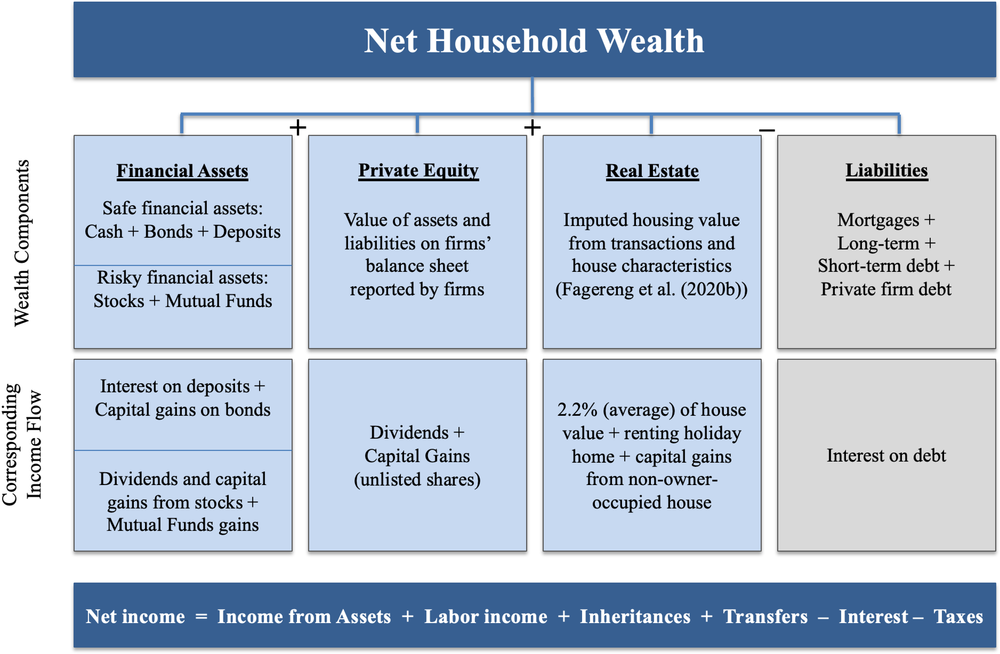
Notes: See Appendix A in OSM for measurement of these variables and additional details.
Most income components are precisely reported in tax records, comprising labor earnings (including self-employment income), interest income and expenses, transfers, and taxes. Rental income from real estate is directly observed. Following the rental-equivalence approach, annual owner-occupied housing income is imputed on average at 2.2% of property value (Eika et al. (2020)), adjusted for changes in the price-to-rent ratio over our sample period (Figure I.2 in OSM).
Measuring equity income (including unrealized capital gains) is more complicated. A 2006 dividend tax reform triggered a shift from dividends to retained earnings (capital gains).6 Following previous studies using Norwegian data (Alstadsæter et al. (2025); Fagereng et al. (2020a, 2019)), we obtain both dividends and retained earnings by linking individuals’ equity ownership—both direct and indirect through holding companies—to companies’ balance sheets using the shareholder registry from 2005 onward, when the registry became complete. This approach captures total returns to equity ownership regardless of payout form, ensuring our measures are not distorted by tax-motivated payout timing.
Prior to 2005, we impute dividends and capital gains by training a gradient boosting regression with around 30 individual and aggregate predictors using post-2005 information. This method can capture complex nonlinear relationships without requiring explicit feature engineering. Out-of-sample predictions successfully replicate both the level of returns and their variation across the wealth distribution. See Appendix A.5 in OSM for details.
Inheritance data are available through 2013, when the inheritance tax was abolished. This registry contains all inter vivos transfers and inheritances—including those below the tax threshold—with information on donors, recipients, and taxes paid. Assets in the inheritance registry are substantially undervalued but subsequently appear at full value in recipients’ wealth, raising measured saving rates and potentially distorting measured return rates. Thus, we correct for this undermeasurement by reversing statutory discount rates. Private equity transfers received a 70% discount on assessed values below NOK 10 million (\(\ensuremath{\sim \$1.5}\) million) until 2009 and 40% thereafter. For real estate, we infer a 45% discount. We proxy unobserved estate composition with the recipient’s portfolio shares.
Adjusted inheritances closely match heirs’ share of donors’ end-of-life estate across all years, providing strong validation. For the wealthiest 0.1%, they remain about 30% below estate shares, possibly reflecting pre-death donations, end-of-life health expenditures, and estate transfer costs. We implement a robustness check for this discrepancy in Section 5.1.1.
For post-2013 years, we impute inheritances by assigning each child an equal share of the deceased’s estate—motivated by the strong fit between adjusted inheritances and estate shares pre-2014. For inter vivos transfers, we first estimate a probit model for receipt (extensive margin), then employ a rich gradient boosting regression to predict amounts conditional on receipt (intensive margin). Out-of-sample validation confirms accurate predictions of both the frequency and magnitude of transfers across wealth groups. Finally, we further augment our measurement of inter vivos transfers by using data on intergenerational equity transfers from the shareholder registry after 2005, replacing their values when shareholder-registry values are larger.7 See Appendix A.6 in OSM for details.
Our data exclude pension wealth. Over 80% of Norwegian pensions are pay-as-you-go, with most of the rest covered by employer-provided plans. Only 0.3% of total pension wealth is held in personal plans reported on tax returns. Given our focus on the wealthiest households, pension wealth likely constitutes a minor fraction of their net wealth.
Our data also exclude offshore wealth not reported to Norwegian tax authorities. Alstadsæter et al. (2018) show that accounting for hidden wealth increases the share of the top 0.1% of households by 1 percentage point (p.p.) of total wealth. Finally, our data exclude assets with difficult-to-measure value (e.g., art or jewelry).
Sample selection. The main variable of interest in our analysis is net wealth, for which the natural decision-making unit is a household. Furthermore, the Norwegian government taxes the wealth of individuals in a household jointly. Therefore, we measure all variables—assets, liabilities, and income—at the household level. In our baseline sample, we consider all individuals who are at least 20 years old with nonmissing net wealth. This leaves us with a sample of 74.4 million individual-year observations and an average of 2.75 million households per year. We convert all nominal values to 2018 prices using the Norwegian Consumer Price Index (OECD (2023)).
Cross-sectional wealth distribution over the life cycle. Before delving into longitudinal dynamics, we briefly describe the evolution of the cross-sectional wealth distribution over the life cycle. The average wealth displays a hump-shaped profile over the life cycle (Figure I.1a in OSM), rapidly increasing from \(0.15\times \text{AW}\) to \(1\times \text{AW}\) between ages 25 and 45, after which wealth accumulation slows down before peaking at \(1.6\times \text{AW}\) at age 65. The median wealth grows faster than the average, indicating a steeper wealth profile in the bottom half of the distribution (Figure I.1b in OSM). Thus, wealth concentration declines over the life cycle (Figure I.1c in OSM), with the share of total net worth held by the top 1% declining sharply from close to 50% at age 25 to less than 20% at age 50, as opposed to the fanning out of earnings inequality (e.g., Ozkan et al. (2023)). We find similar patterns in the SCF (Federal Reserve Board (2020)) despite the significantly higher wealth concentration in the US. This suggests that similar economic forces are in play behind lifecycle wealth dynamics in both countries.
3 Lifecycle Wealth Dynamics
As a first step toward our dynamic decomposition, we describe how each household budget constraint component evolves differently across the wealth distribution. We organize the empirical analysis around the intertemporal budget equation
$$
W_{i,t}=W_{i,t-1}+(R_{i,t}W_{i,t-1}+L_{i,t}+H_{i,t})_{i,t}, $$
where \(W_{i,t}\) denotes household \(i\)’s net worth in year \(t\). The return on net wealth \(R_{i,t}\) includes income from equity (including unrealized capital gains), safe assets, and real estate, net of interest payments and wealth and capital income taxes. After-tax labor earnings \(L_{i,t}\) include wage and salary income, self-employment income, and government transfers (such as unemployment and disability benefits). Inheritances and inter vivos transfers net of taxes are captured by \(H_{i,t}\). Finally, \(S_{i,t}\) represents the gross saving rate from total income, so that consumption equals \(\left (1-S_{i,t}\right)\times \left (R_{i,t}W_{i,t-1}+L_{i,t}+H_{i,t}\right)\).
To understand the heterogeneity underlying our decomposition results, we examine these variables over the life cycle across wealth groups using two complementary approaches. Our main approach retrospectively traces these variables over the preceding 26 years, stratified by the terminal wealth quantile and age group. For example, we identify wealthy households in 2019 and follow their trajectories back to 1993.
Although intuitive, this backward-looking approach suffers from a “survivorship bias”—focusing exclusively on successful households may obscure critical information about those who failed to accumulate wealth. To address this limitation, we complement it with a forward-looking approach that tracks the same variables prospectively over 26 years through 2019, conditional on initial wealth and age.
3.1 Methodology
Retrospective Analysis. For each conditioning year \(\tau \leq 2019\), we group household heads into 5-year age bins, \(h\in \left \{45-49,...,75-79,80+\right \}\), where the lower bound of 45 ensures we can follow at least some households back to age 20 in 1993. Within each age group \(h\), we rank them with respect to their average net wealth between \(\tau\) and \(\tau -1\), \(\overline{W}_{i,\tau}^{h}\equiv 0.5\times \left (W_{i,\tau}+W_{i,\tau -1}\right)\), which mitigates transitory fluctuations.
We partition households into nine wealth groups denoted by \(BW_{j}^{h}\). The first two contain households with negative average net wealth (\(\overline{W}_{i,\tau}^{h}<0\)) and those with minimal positive wealth, \(\overline{W}_{i,\tau}^{h}\in \left [0,W_{t}^{\min}\right)\), where \(W_{\tau}^{\min}\) is 9,000 NOK in 2019. These groups comprise 21.5% and 3.4% of our sample in 2019, respectively. The remaining households are then ranked into the following seven quantiles: \(j\in \left \{\left [W_{\tau}^{\min},P50\right),\left [P50,P75\right),\left [P75,P90\right),\left [P90,P95\right),\left [P95,P99\right),\right.\) \(\left.\left [P99,P99.9\right),\geq P99.9\right \}\), where \(Px\) denotes the \(x\)th percentile of the \(\overline{W}_{i,\tau}^{h}\) distribution.
For each age-wealth group \(BW_{j}^{h}\), we compute moments of all budget constraint variables, denoted \(\mathbb{M}_{h,j}^{\tau}\). To control for year effects, we repeat this analysis across 10 conditioning years \(\tau \in \left \{2010,2016,...,2019\right \}\) and average the resulting moments: \(\overline{\mathbb{M}}_{h,j}=\frac{1}{10}\sum _{\tau =2010}^{2019}\mathbb{M}_{h,j}^{\tau}\).8 Restricting to \(\tau \geq 2010\) ensures a minimum 17-year panel window for all households.
Forward-looking Analysis. We also group household heads aged 20+ into five-year age bins (\(h\)) for each \(\tau \in \left \{1993,1994,...,2002\right \}\). Within each age group \(h\), households are ranked by their average net wealth \(\overline{W}_{i,\tau}^{h}\) and assigned to the same nine wealth categories (\(j\)) defined previously. These forward-looking wealth groups, denoted \(FW_{j}^{h}\), trace wealth accumulation paths conditional on initial economic positions. As before, we report moments averaged across all conditioning years.
Unit of Analysis and Household Composition. We measure wealth and income at the household level—where saving decisions are made— while tracking individuals who are household heads in conditioning year \(\tau\). These individuals may belong to different households over time (e.g., due to marriage or divorce). Although family formation can affect wealth accumulation (Fagereng et al. (2022)), our results are robust when restricting the analysis to a balanced panel of compositionally stable households (see Appendix I in OSM).
3.2 Dynamic Average Wealth Profiles
We start by presenting the average net worth (\(W_{i,t}\)) over the life cycle. Figure 2a shows that the richest 0.1% of households aged 50–54 (\(BW_{\geq P99.9}^{50-54}\)) own \(124.3\times \text{AW}\). The same households were already quite wealthy 26 years prior, owning \(6.9\times \text{AW}\), indicating a substantial degree of persistence at the top of the wealth distribution. The next 0.9% wealth group has seen average wealth increasing from \(1.1\times \text{AW}\) to \(11.9\times \text{AW}\) over the same period. Similarly, \(FW_{\geq P99.9}^{20-24}\)—those in the top 0.1% of households aged 20–24—own \(18.8\times \text{AW}\) in the beginning of the sample period. Instead of seeing any mean reversion, their wealth increased to \(40\times \text{AW}\) by their mid-40s (Figure 2b). In fact, the top group’s wealth growth is similar to that of the other groups in the top 5%; consequently, wealth concentration in the right tail of the distribution remains mostly unchanged over the life cycle.
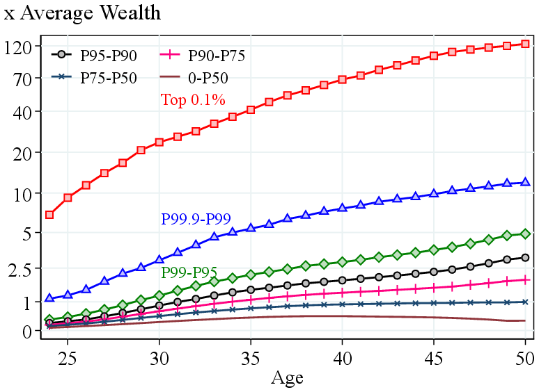
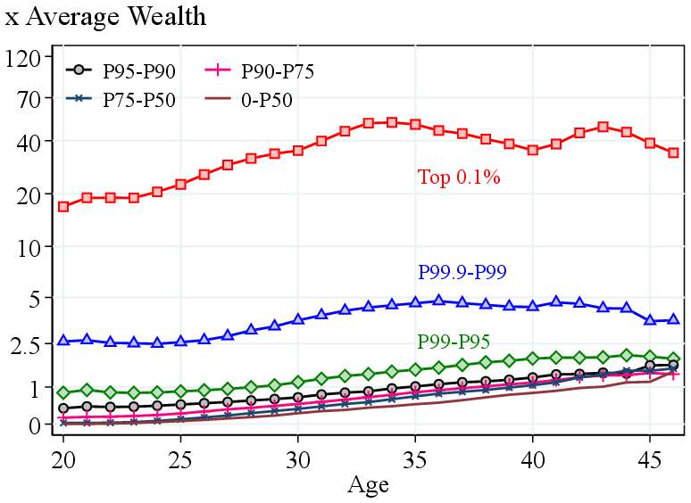
Notes: Figures 2a and 2b show the backward-looking and forward-looking average wealth profiles, respectively. The vertical axis displays wealth in units of \(AW\), re-scaled using the inverse hyperbolic sine (IHS) transformation (IHS, Pence (2006)) given by \(\ln \left (\theta W_{it}+\sqrt{\theta ^{2}W_{it}^{2}+1}\right)\) with \(\theta =0.5\).
Consistent with these patterns, 24.0% of \(BW_{\geq P99.9}^{50-54}\) were already in the top 0.1% quantile of their cohort initially (Figure B.1a in OSM). We later refer to these households, who started their lives rich and have remained rich, as part of the “Old Money” and investigate them in more detail. Yet, about 24% of those who reach the top 0.1% of the distribution started below the 90th percentile. This group of households broadly belongs to the “New Money” who start with average initial wealth of \(-0.1\times AW\), and we contrast their wealth dynamics with that of the Old Money in Section 4.
Despite the substantial persistence at the top of the wealth distribution over the life cycle, the bottom half of the distribution converges to the median. Young households with little wealth experience steep wealth growth, especially between ages 25 and 35. Therefore, the decline in wealth inequality is mainly because of the bottom half of the distribution converging toward the median.
Given our research question—why are the wealthiest so wealthy?—we focus primarily on the retrospective approach, highlighting differences with the forward-looking approach where relevant. This approach allows us to quantify the mechanisms—high saving rates, returns, inheritances, labor income—that characterize actual top wealth accumulation, rather than ex ante expected paths that may or may not lead to the top. We concentrate on prime-age households (50–54 years old) in the main text (i.e., \(BW_{j}^{50-54}\)), discussing age variation where relevant. See Appendices in OSM for the results from the forward-looking approach and for other age groups.
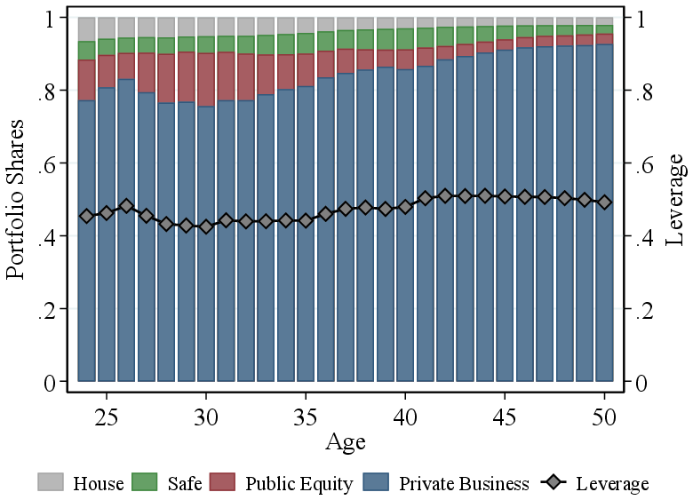
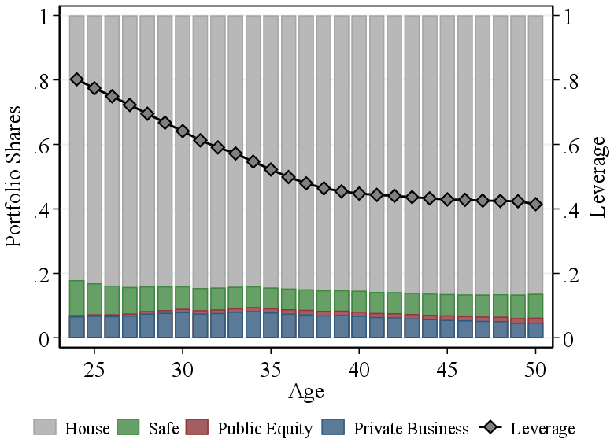
Notes: Figure 3 shows the portfolio shares (left y-axis) and leverage (right y-axis) for households aged 50–54, weighted by gross assets. Private business share is defined as the ratio of private business assets to gross household wealth and leverage includes both personal debt and private business liabilities.
3.3 Portfolio Composition and Long-term Returns
We now analyze differences in rates of return by focusing on four broad asset categories—housing, safe assets, public equity, and private business wealth—as well as liabilities (including both personal debt and private firm liabilities).
As has been documented in cross-sectional data (e.g., Carroll (2000)), wealthy households tend to hold most of their wealth in equity, particularly in private businesses. For the top 0.1% group (\(BW_{\geq P99.9}^{50-54}\)), the average equity share of the portfolio over the previous 26 years hovers above 90%, almost all of it invested in private businesses (Figure 3a). Exploiting our longitudinal data further, we show that households reaching the top 0.1% invested in equity significantly more heavily starting earlier in life, even compared with those of similar wealth and age (Appendix D in OSM). Therefore, their large equity shares do not just reflect the cross-sectional correlation. They have small shares of safe assets and housing, which remain roughly constant over the life cycle. Finally, they are moderately levered throughout life, primarily through private businesses, with liabilities hovering around 50% of total assets (including firm assets).9
In contrast, for households below the 95th percentile of the wealth distribution, housing is the single most important asset in their portfolios. For example, for median-wealth households (\(BW_{\left [P25,P75\right)}^{50-54}\)) housing constitutes around 90% of their gross wealth throughout the sample period (Figure 4b).10 They also start their lives with much higher leverage (80% of total assets), mostly in the form of long-term debt, and reduce it to 40% of total assets by age 50.
Lifecycle Returns. Consistent with recent empirical evidence (Fagereng et al. (2020a); Bach et al. (2020)), Figure 4a shows large differences in life cycle average returns.11 For households aged 50–54, the average annual return over the previous 26 years increases monotonically from 1.4% for those below median (\(BW_{\left [W_{t}^{\min},P50\right)}^{50-54}\)) to 9.1% for the top 0.1% (\(BW_{\geq P99.9}^{50-54}\)). These differences are more pronounced among younger cohorts: There is only a 3.5 p.p. difference among households aged 80 and above versus 7.5 p.p. for those aged 50–54. Finally, the wealthiest earn more volatile and more positively skewed returns (Figure C.3 in OSM).
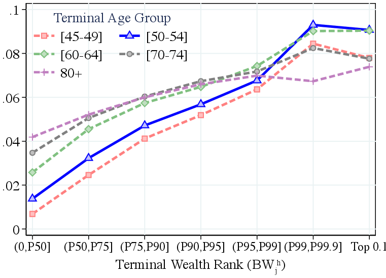
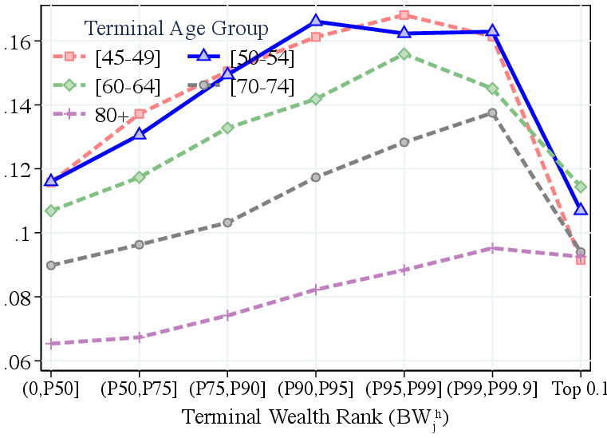
Notes: 26-year average of asset value-weighted mean annual returns within terminal age and wealth groups, averaged across different conditioning years. Equity wealth includes public equities and private business wealth (net of private business liabilities).
Equity returns are substantially higher but hump-shaped across the wealth distribution. They rise from 12% for below-median households to above 16% in the top 10% of the wealth distribution, then decline to 11% for the top 0.1% group, \(BW_{\left [\geq P99.9\right)}^{50-54}\) (Figure 5b).12 This pattern aligns with standard models of entrepreneurs facing decreasing returns to scale and collateral constraints (e.g., Cagetti and De Nardi (2006)), as discussed in Section 6. These findings indicate that the top 0.1% earn higher returns on net worth primarily through their larger equity allocation.
Examining returns on safe assets and housing, we find that the first generates the lowest returns, ranging from below 1% for below-median wealth households to 3.5% for the top 0.1% (Figure C.2a in OSM). Housing returns increase from around 5% for below-median households to about 8% above the 95th percentile (Figure C.2b in OSM).
Although backward-looking measures mechanically reflect selection—since households with high past returns are more likely to end up at the top—our forward-looking analysis shows similar patterns when households are ranked by initial wealth. Households starting wealthy earn persistently higher returns (Figure C.4a in OSM), largely driven by higher equity portfolio shares (Figure I.17 in OSM). Thus, selection alone does not explain the strong portfolio and return differences we observe.
3.4 Labor Income and Inheritance Heterogeneity
Among 50- to 54-year-olds, average annual labor income \((L_{i,t})\) over the past 26 years rises from above \(0.2\times AW\) for below-median-wealth households to \(0.6\times AW\) for the top 0.1% (Figure 5a). While economically meaningful, mechanically accumulating these differences explains only a modest fraction of the wealth gap, and their contribution depends critically on how long income differences compound and on associated differences in saving and return rates. Moreover, the gradient is noticeably flatter for younger age groups, limiting the scope for compounding early in life. Our S-O decomposition in Section 5 provides a disciplined way to quantify these forces.
Although labor income exceeds inheritances \((H_{i,t})\) for most age and wealth groups (Figure 5b), the inheritance gradient is much steeper in relative terms. Inheritances are nearly zero for below-median wealth households but rise to above \(0.4\times AW\) annually for the top 0.1%. Unlike labor income, top wealth owners receive inheritances earlier in life, allowing longer compounding. The steep relative gradient and earlier timing highlight inheritances’ distinctive role at the top.
Despite higher labor income and inheritances, these sources constitute only a small share of lifetime resources—the noncompounded sum of all income plus initial wealth in 1993—for the top 0.1% (for details see Appendix E in OSM). For the top 0.1%, labor income and inheritances account for less than 13% of lifetime resources, while equity income constitutes around 88% (consistent with high returns and large initial wealth). In contrast, the bottom 90% derive 80%-90% of their lifetime resources from labor (see also Black et al. (2023)).
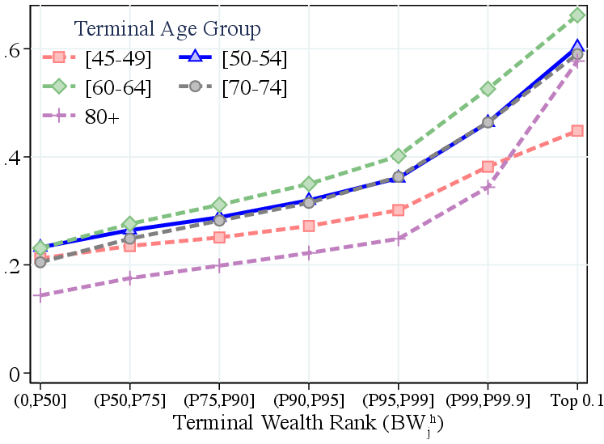
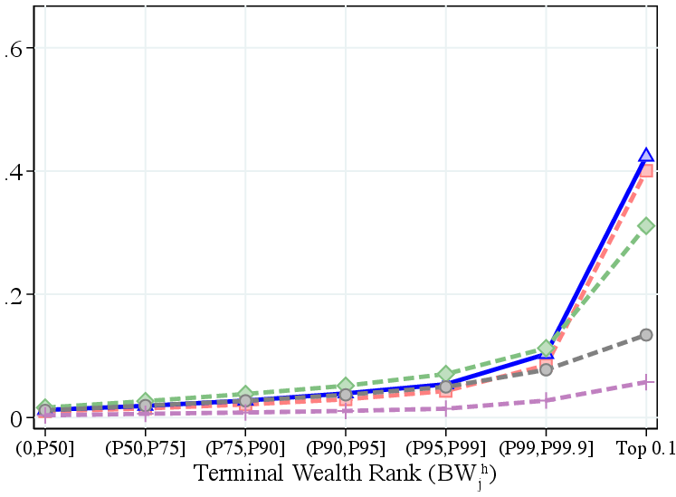
Notes: Average annual after-tax, after-transfer labor income (including self-employment income) and after-tax inheritances (including inter vivos transfers) in the last 26 years.
3.5 Lifecycle Saving Rate Heterogeneity
Several papers show that saving rates increase with wealth and income (e.g., Fagereng et al. (2019), Bach et al. (2017), Carroll (1998), and Dynan et al. (2004)). We confirm this finding holds true from a lifecycle perspective. We define individual \(i\)’s lifetime saving rate as \(S_{i}=\left (W_{i,\tau}-W_{i,1993}\right)/Y_{i,\tau}\), where \(Y_{i,\tau}\) is lifetime income—the sum of income from all sources between 1994 and \(\tau\) (equation 1). For each age \(h\) and wealth group \(j\), we compute the average saving rate weighted by the lifetime income \(Y_{i,\tau}\), then average across base years \(\tau\).
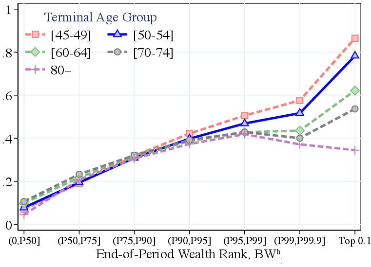
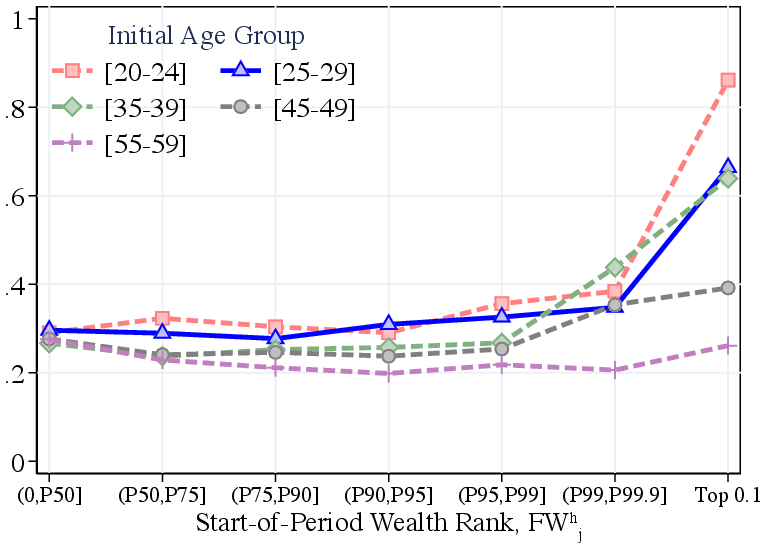
Notes: Lifetime saving rate, defined as the ratio of cumulated savings to cumulated gross income, by terminal and initial age and wealth groups.
The lifetime saving rate increases with wealth, from around 10% for the bottom half of the wealth distribution to 35%-85% for the top 0.1% across age groups, with a steeper gradient for younger age groups (Figure 6a). By age 50–54, the richest households have saved around 80% of lifetime income, while the middle class, (P50-P75], have saved around 20% of their lifetime income. These patterns align with those in Fagereng et al. (2019).13
Again, a potential concern is that the wealth-saving correlation is mechanical, as higher saving rates move households up the distribution. However, Figure 6b shows that lifetime saving rates remain strongly increasing in initial wealth (\(FW_{h}^{j}\)), though the relationship is quantitatively weaker. Households starting below \(P75\) save around 25%-30% of their lifetime income, while those in the top 0.1% save up to 80%.
4 New Money versus Old Money
While the wealthiest on average start their working lives very rich, at least a quarter of them start with minimal wealth (Section 3.2). This section examines within-group heterogeneity among the wealthiest aged 50–54 \(\left (BW_{\geq P99.9}^{50-54}\right)\) by ranking them into quartiles based on the sum of initial wealth \(\left (\overline{W}_{i,1994}\right)\) and the net present value of all future net inheritances discounted at the average net wealth return of 3.3%.14 Bottom quartile households—the “New Money”—start with little wealth and receive minimal intergenerational transfers but eventually reach the top of the wealth distribution. Top quartile households—the “Old Money”—are already wealthy when young and remain in the top wealth group. We confirm that the New Money actually come from modest backgrounds with limited resources, whereas the Old Money are substantially more likely to have wealthy parents.15
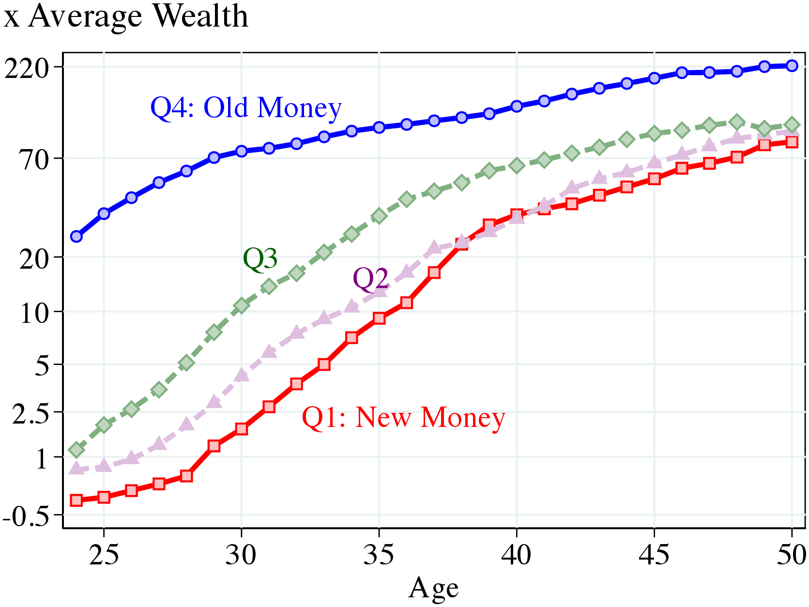
Notes: Retrospective average wealth profile of four groups within the top 0.1% group aged 50–54, which are ranked by the sum of their initial average wealth \(\left (\overline{W}_{i,1994}\right)\) and the present value of all inheritances net of taxes. The y-axis is re-scaled using the IHS transformation.
4.1 Average Wealth Profiles
The Old Money have an average net worth of \(25.9\times \text{AW}\) in 1993 in their early 20s versus a negative \(-0.1\times \text{AW}\) for the New Money (Figure 7). The New Money then experience rapid wealth growth, especially between their late 20s and age 40, after which growth slows down. By contrast, the Old Money see their wealth grow steadily. As a result, while the gap between the Old Money and New Money shrinks significantly, it remains quite large even after 26 years. The two middle quartiles are closer to the New Money than to the Old Money, in terms of their initial wealth and lifecycle wealth dynamics.16
Where does the initial wealth of the Old Money come from? Although we do not have data on inter vivos transfers and inheritances prior to 1994, we use data on post-tax and transfer labor earnings since 1967 to argue that the Old Money’s vast majority of initial wealth should be thought of as having originated from intergenerational transfers. First, the simple sum of earnings until age 24 amounts to only \(1.19\times \text{AW}\), or 4.6% of initial Old Money wealth. Second, instead of simply summing up all labor income, we capitalize it before 1993 using the average saving rate and return on wealth observed between 1993 and 2019 for this group. By this metric, they would have accumulated \(0.98\times \text{AW}\) from their labor income prior to 1993, which again accounts for only 3.8% of their initial wealth. Finally, in Section 5 we extend the S-O decomposition back to age 20 by finding younger “twins” of the Old Money to show that the fundamental source of their wealth in their mid-20s is intergenerational transfers.
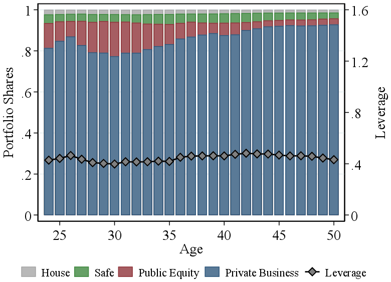
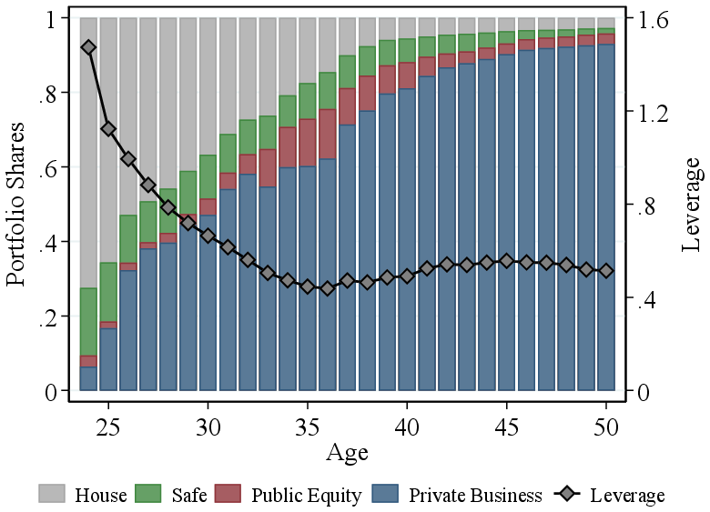
Notes: Portfolio shares and leverage for the Old Money (left) and New Money (right) aged 50–54.
4.2 Portfolio Composition and Long-term Returns
Because the Old Money hold the majority of wealth within the top 0.1%, their portfolios closely mirror the weighted average for the group shown in Section 3.3: They have invested heavily in equity, particularly private business, and maintain moderate leverage mainly through their firms. Total liabilities hover above 40% of total assets, similar to the leverage of their businesses (Figure 8a).
In contrast, the New Money start their working lives with only 9.5% of their portfolios in equity (Figure 8b). As their wealth grows, its composition shifts from housing to private business, reaching 95.4% of their portfolio by their 50s—similar to Old Money’s private business share. Notably, the New Money start highly indebted—with a 1.47 debt-to-asset ratio (thereby starting with negative average net wealth)—but quickly reduce leverage to around 45% until age 35. Consistent with their portfolio evolution, the liabilities shift from personal debt to private business debt, which decline from above 60% of firm assets to about 50% by age 50.17 Thus, New Money businesses are somewhat more levered than those owned by Old Money.
Lifecycle Returns. The New Money earn substantially higher returns on net wealth across age groups, with generally more pronounced differences for younger cohorts (Figure 9a). For those aged 50–54, the average return on net wealth is 12.2% for the New Money versus 7.5% for the Old Money. This finding is perhaps surprising because the New Money initially hold less equity—the highest-returning asset class. We therefore investigate average returns for each asset class individually.
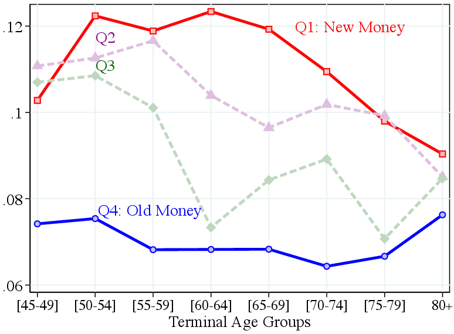
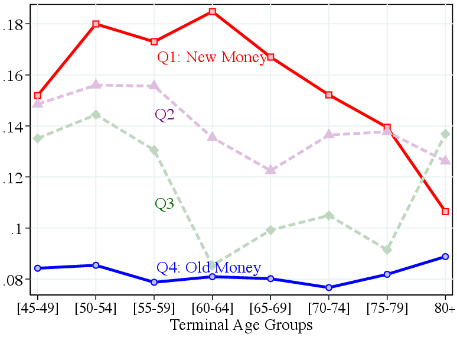
Notes: 26-year value-weighted average returns for four quartiles within the top 0.1% group aged 50–54.
Early in life, the New Money are mostly invested in housing, earning returns similar to those of the Old Money. We also do not find significant differences in safe asset returns between the groups (see Figure C.5 in OSM). Instead, differences in net wealth returns stem mainly from large disparities in equity returns (Figure 9b). Among 50- to 54-year-olds, the New Money earn a high 18.0% annual average return on their equity versus 8.5% for the Old Money. Thus, although the New Money hold smaller equity shares, substantially higher returns from these investments yield higher long-term returns on net wealth relative to the Old Money.
Higher equity returns for the New Money, however, come with higher volatility. For instance, among 50- to 54-year-olds, the P90-P10 gap of the returns on net wealth is around 58% for the New Money versus 49% for the Old Money (Figure C.6 in OSM). Furthermore, this higher dispersion is mainly driven by more volatile yet more positively skewed equity returns for the New Money relative to the Old Money.
Labor Income and Inheritance Heterogeneity. By construction, the Old Money receive substantially higher intergenerational transfers after age 24. The Old Money households aged 50–54 receive an average of \(1.2\times AW\) in inheritances annually, compared with nearly zero for the New Money. Labor earnings show no significant differences between these groups.
4.3 Lifetime Saving Rate
The large differences in rates of return help explain the closing wealth gap between the New Money and Old Money over the life cycle. However, saving behavior also plays a major role. As Figure 10 shows, the New Money save at substantially higher rates than the Old Money across age groups. Among 50- to 54-year-olds, the New Money’s lifetime saving rate—defined in Section 3.5— is roughly 20 percentage points higher than that of the Old Money. In the next section, we quantify the importance of these channels (e.g., saving rate, rate of return, and so on) for wealth accumulation differences between the New Money and Old Money.
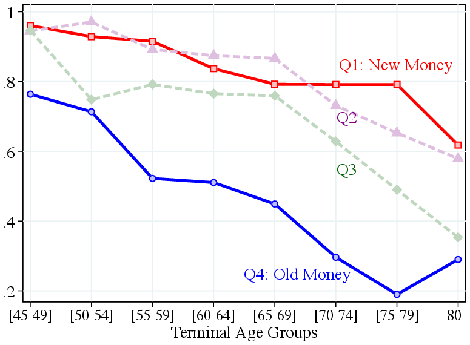
Notes: Lifetime saving rate (see Section 3.5) for four quartiles within the top 0.1% group aged 50–54.
5 Why Are the Wealthiest So Wealthy?
So far, we have shown that wealthy households differ systematically from the rest of the population in their initial wealth, portfolio composition, return rates, sources of income, and saving rates. In this section, we combine these results to provide a set of counterfactuals to quantify the importance of these factors. We focus on five main sources of heterogeneity in the budget constraint: rates of return, saving rates, labor income, inheritances (including inter vivos transfers), and initial wealth.
The decomposition begins with the budget constraint in equation 1, from which we derive the path of net worth between 1994 and \(\tau\) as a function of five sequences of factors, \(\left \{W_{i,t}\right \} _{t=1994}^{\tau}=f\left (W_{i,1993},\left \{L_{i,t},H_{i,t},R_{i,t},S_{i,t}\right \} _{t=1994}^{\tau}\right)\).18 We use this function to simulate counterfactual wealth profiles by iteratively replacing these factors with values from the reference group.19 We use the middle 50% (households between the 25th and 75th percentiles of wealth) in the same age group and conditioning year, \(BW_{[P25,P75)}^{h}\), as the reference group. For any wealth group \(BW_{j}^{h}\), we start with the budget constraint in the initial year and simulate the counterfactual wealth evolution consecutively for the following years by replacing some or all factors with their corresponding values for the reference group.
For example, to assess how the wealth profile of the top 0.1% of wealth owners (\(BW_{\geq P99.9}^{50-54}\)) in 2019 would differ had they earned the same return as the middle 50%, we construct a counterfactual average wealth profile by assigning them the after-tax return of mid-wealth households in the same cohort (\(\bar{{R}}_{t}\)) while holding all other factors fixed at their actual values—that is, \(f\left (W_{i,1993},\left \{L_{i,t},H_{i,t},\bar{{R}}_{t},S_{i,t}\right \} _{t=1994}^{\tau}\right)\). We repeat this construction for each conditioning year \(\tau \in \left \{2010,2011,...,2019\right \}\) and average over \(\tau.\) See Appendix F in OSM for details.
These counterfactual wealth profiles abstract from behavioral responses and thus capture only first-order effects of each dimension of heterogeneity. Replacing labor income, for instance, may also affect saving rates, portfolio composition, or realized returns. While such interactions could matter quantitatively, our dynamic accounting decomposition offers a simple and transparent empirical benchmark that quantifies the first-order contribution of each component. Moreover, the resulting dynamic moments provide disciplined targets for evaluating and estimating structural models of wealth inequality in Section 6.
Expanding panel dimension. Our 26-year panel allows us to trace households aged 50–54 back to their mid-20s to late-20s depending on birth year (in 1993). While this approach already captures most of their wealth accumulation, it is more restrictive for older cohorts and for the Old Money, who possess substantial initial wealth. To extend the analysis back to age 20, we supplement wealthy households in the baseline sample with younger “twins.”
We identify younger twins of the wealthiest households in our baseline sample (i) whose wealth profiles closely resemble those of the original top 0.1% households over a ten-year window beginning at the age at which the originals are first observed (e.g., ages 24–33 for the youngest cohort) and (ii) who are age 20 or younger in 1993. Similarity is measured using the Mahalanobis (1936) multivariate distance metric. For each original household, we select the closest match, choosing as many twins as there are original wealthy households (additional details in Appendix F in OSM). Average wealth profiles of twins and originals align closely between ages 24 and 33 (Figure F.1 in OSM).
Because the decomposition begins at age 20, we interpret initial wealth at that age as intergenerational transfers. For parsimony and consistency with the structural model in Section 6, we combine initial wealth and inheritances into a single category in the decomposition, although we discuss their individual roles below.
5.1 Decomposing Top Wealth Inequality
Before turning to the S-O decomposition, we begin with a simple counterfactual exercise that changes only one factor at a time while keeping others unchanged (see Figure F.7 in OSM). This “single-factor” decomposition isolates the importance of each component independent of changes in other contributing factors; therefore, the resulting effects do not sum to 100%.
Replacing the high returns of the top 0.1% among households aged 50–54 (\(BW_{\geq P99.9}^{50-54}\)) with average returns of mid-wealth households sharply reduces their terminal wealth from \(124\times \text{AW}\) to \(31\times \text{AW}\)—a decline of about \(90\times \text{AW}\). Similarly, substituting their initial wealth at age 20 with those of median households lowers wealth at age 50 by about \(85\times \text{AW}\), while inheritances received after age 20 contribute only \(21\times \text{AW}\), underscoring the importance of longer compounding time.
Substituting the labor income of mid-wealth households has only a small effect (\(9\times \text{AW}\)), consistent with the low share of lifetime resources the top 0.1% derive from labor and the smaller labor income gaps earlier in life. By contrast, replacing their high saving rate with that of mid-wealth households reduces wealth at 50 by a staggering \(115\times \text{AW}\), reflecting the central role of saving behavior for accumulating large fortunes.
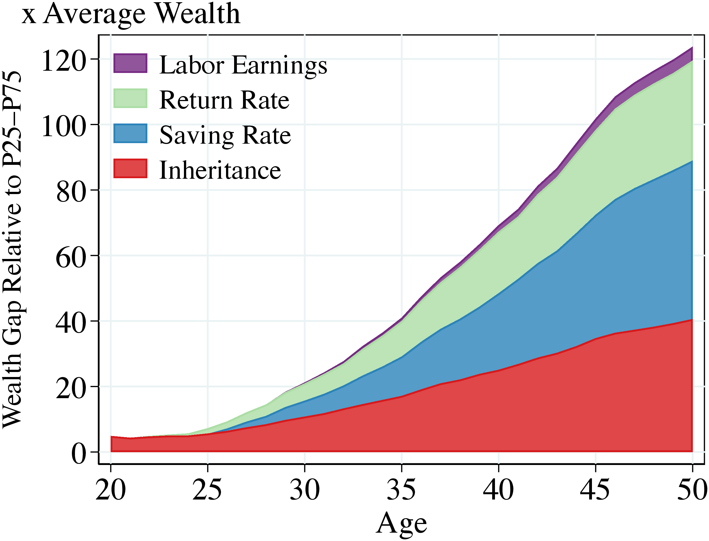
Notes: The S-O decomposition for top 0.1% households aged 50–54.
5.1.1 Shapley-Owen Decomposition.
The previous results quantify each factor’s importance holding others fixed at their actual values. For instance, we find that high returns are very important for the high net worth of the wealthiest by simulating a counterfactual wealth path with mid-wealth households’ rate of return while keeping their actual high inheritances. The importance of a high return on wealth, however, would be diminished if the wealthiest received the (lower) inheritances of mid-wealth households. More generally, because the budget constraint is jointly nonlinear in the respective components, summing the marginal effects in the previous section adds up to more than 100% of the wealth gap. Relatedly, the order in which the respective components of the budget constraint are replaced matters.
To address these concerns, we employ a Shapley-Owen decomposition, which cycles through all possible permutations of the order in which different components of the budget constraint are replaced (5! = 120 combinations for five variable sets). Furthermore, the resulting average marginal effects exactly add up to account for the entire wealth between any given group and the reference group of mid-wealth households (Shorrocks (2013)). See Appendix F in OSM for details.
Figure 11 summarizes the results for households in the top 0.1% at age 50-54. Inheritances (including those at age 20 and afterward) account for a large share of the wealth gap, declining from 100% of the gap in the beginning (by construction) to 32.8% of the gap by age 50. As individuals age, the relative importance of inheritances declines—even though individuals receive inheritances later in life as well—while the roles of saving rates and rates of return rise. By age 50, higher saving rates explain 39.1% of the gap and higher returns account for 24.7%. Together, these three components account for 96.6% of the total wealth gap. The small remainder (3.4%) is accounted for by higher labor earnings.
We conclude that, first, higher labor income and higher returns, which are typically regarded as the main drivers of wealth inequality, jointly explain less than one-third of the wealth gap. Second, differences in saving rates are at least as important a factor. As demonstrated in Section 6, these differences are difficult to attribute to precautionary saving motives or higher expected returns, and instead necessitate nonhomothetic preferences.
Lastly, while previous research has found a minor role for intergenerational transfers in perpetuating wealth inequality, we show that inheritances account for at least one-third of the top wealth gap.20 For example, Black et al. (2022) also use Norwegian data to argue that transfers are not the primary source of wealth, even among the very wealthy.21 Our contrasting findings reflect differences in the measurement of inheritances as well as that the wealthiest receive transfers earlier in life and compound them at significantly higher rates through elevated returns and saving rates relative to the rest of the population.
5.1.2 Additional Results and Robustness
Other age groups. For brevity, our main analysis focused on households aged 50–54. The top panel of Table I extends the S-O decomposition to other age groups ranging from 45—the oldest age for which we can track households back to age 20 without relying on the twin-matching procedure—to 64, the final pre-retirement age group. Across these age groups, the excess wealth of top 0.1% households relative to median households is consistently explained by three primary factors: higher saving rates (35%–39%), inheritances received at age 20 and afterward (30%–33%), and higher returns (25%–29%). Higher labor income accounts for the residual (3%–6%). The contribution of each factor varies only marginally across age groups (and compared to our benchmark 50- to 54-year-old group), and this stability reinforces our main finding.
Other wealth groups. Given the large wealth concentration at the top of the distribution, our main analysis focused on the wealthiest 0.1% of households. Panel II of Table I presents the S-O decomposition for other wealth groups within the top 10% of the distribution.22 Moving up the wealth distribution, we see several patterns emerge. First, inheritances play an increasingly important role in explaining excess wealth relative to median households at the very top, reflecting both the greater concentration of inheritances among the wealthiest (Figure 5b) and stronger compounding through higher saving and return rates. Second, while saving rates increase monotonically in household wealth (Figure 6), their relative contribution declines in the far right tail. Third, the relative importance of differential returns on net wealth increases monotonically in household wealth, mirroring the pattern for lifetime average rates of return (Figure 4) and that the wealthiest possess larger initial wealth (Figure 2) to compound over time. Finally, the contribution of labor income declines at the top of the wealth distribution, consistent with our findings on sources of lifetime income (Appendix E in OSM).
Robustness under alternative assumptions. Panel III of Table I reports the sensitivity of our baseline S–O decomposition to alternative assumptions (see Figure F.3 in OSM for corresponding age profiles). Scenario 1 (S1) replaces private-firm tax values with imputed market values using time-varying market-to-tax value multipliers estimated from publicly listed firms.23 This adjustment mechanically raises the net wealth of the top 0.1% from \(124\times AW\) to \(215\times AW\)—reflecting an average multiplier of about 1.8 and the high private-equity share of top portfolios—and generates corresponding capital gains and savings. However, the S-O shares change little because initial wealth, capital income, and savings all rise roughly proportionally.
S2 imputes additional intergenerational transfers by marking up observed inheritances and inter vivos transfers after age 20 by 30% for the top 0.1%. The 30% factor comes from linking children to parents and comparing parental wealth at death to our adjusted registered inheritance measure; for the top 0.1%, this ratio averages 1.3 (Figure A.3 in OSM). We view this as an upper bound, since not all parental wealth is necessarily transferred. Even so, the inheritance share in the S–O decomposition increases only slightly, reflecting that most of the inheritance contribution arises through initial wealth at age 20 and its compounded effect over the life cycle.
S3 removes remaining aggregate time-series trends beyond those already eliminated by normalizing by calendar-year average wealth (\(AW\)) as well as averaging over 10 conditioning years. For each budget variable—net wealth, labor income, capital income, and inheritances— in each age we create a time-independent distribution by averaging their quantile functions across all years (for details see Appendix F.1 in OSM). Thus, someone at P99 of the age-50 wealth distribution in any year owns the same time-averaged wealth value, while her labor income or capital income are replaced with values from corresponding age-specific time-invariant distributions. This yields a synthetic stationary panel that preserves lifecycle and cross-sectional heterogeneity within each variable while removing all remaining time-varying shifts. Our S-O decomposition results under this exercise remain close to the benchmark, suggesting little role for nonstationarity in our data. The terminal wealth level of the top 0.1% decreases slightly, from \(124.3\times AW\) to \(119.8\times AW\), reflecting that wealth inequality at the end of our sample was slightly above the sample average.
| 2019 Wealth (\(\times AW\)) | Inheritance | Saving | Return | Labor | ||||||
| I. Terminal age groups for the top 0.1%, wealth dynamics from age 20 | ||||||||||
| Age 45–49 | 98.0 | 31.2% | 33.9% | 29.2% | 5.7% | |||||
| Age 50–54 | 124.3 | 32.8% | 39.1% | 24.7% | 3.4% | |||||
| Age 54–59 | 126.7 | 29.7% | 37.3% | 27.8% | 5.1% | |||||
| Age 60–64 | 122.0 | 30.8% | 35.1% | 29.2% | 4.9% | |||||
|
||||||||||
| \(\left [P90,P95\right)\) | 3.1 | 22.7% | 62.2% | 6.3% | 8.9% | |||||
| \(\left [P95,P99\right)\) | 4.9 | 27.4% | 53.9% | 8.4% | 10.3% | |||||
| \(\left [P99,P99.9\right)\) | 11.9 | 36.7% | 40.7% | 13.0% | 9.6% | |||||
| Top 0.1% | 124.3 | 42.4% | 37.4% | 16.5% | 3.7% | |||||
|
||||||||||
| Baseline | 124.3 | 32.8% | 39.1% | 24.7% | 3.4% | |||||
| S1. Market value private firms | 215.4 | 33.3% | 36.0% | 28.4% | 2.3% | |||||
| S2. Marking up inheritances | 124.3 | 33.5% | 38.9% | 24.0% | 3.5% | |||||
| S3. Stationary distribution | 119.8 | 32.1% | 37.1% | 28.4% | 2.3% | |||||
Notes: Each row reports average wealth in 2019 together with the S-O decomposition shares. Panel I reports results for the top 0.1% at different terminal ages, tracking wealth dynamics from age 20 (twins are added to extend profiles back to age 20, except for the 45–49 group). Panel II reports results for different wealth groups within the terminal age group 50–54, tracking wealth dynamics from age 24 without twin matching. Panel III reports robustness exercises for the baseline group of the top 0.1% aged 50–54, including alternative assumptions on private-firm valuation (S1), intergenerational transfers (S2), and the construction of stationary age-specific distributions (S3).
5.2 Decomposing the New Money–Old Money Wealth Gap
The importance of each variable in the budget constraint for wealth accumulation differs sharply between the Old Money, who begin adulthood with substantial wealth, and the New Money, who start with very little wealth. To quantify these differences, we apply the S-O decomposition separately to each subgroup of the top 0.1%. Figure 12 reports the decomposition of each group’s lifetime wealth gap relative to the P25–P75 reference households.
Old Money. Figure 12a shows that inheritances dominate as the source of the Old Money’s wealth advantage. Higher saving rates are the second-largest contributor, while higher returns also matter but to a smaller degree. By age 50, 42.2% and 31.4% of the wealth gap of the Old Money is explained by higher inheritances and higher saving rates, respectively. A higher return on wealth represents 25.9%, whereas only 0.6% is accounted for by relatively higher labor income.
New Money. The New Money tell a different story (Figure 12b). High saving rates account for 50.1% of their excess wealth relative to mid-wealth households, followed by high returns on wealth (37.6%) and high labor income (13.3%). In contrast, inheritances contribute close to zero—indeed, they are slightly negative at -1.1%—consistent with these households starting with slightly negative initial wealth, below the average of the middle wealth group.
This contrasting evidence highlights the distinct economic forces that propel different households into the top of the wealth distribution: inherited wealth and saving behavior for the Old Money, versus aggressive saving, strong returns, and high labor income for the New Money. We use these insights in the next section to distinguish between competing theories of top wealth inequality.
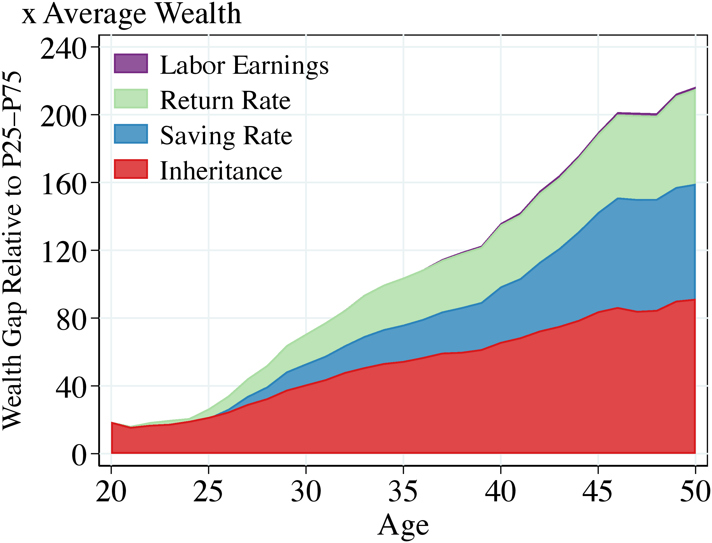
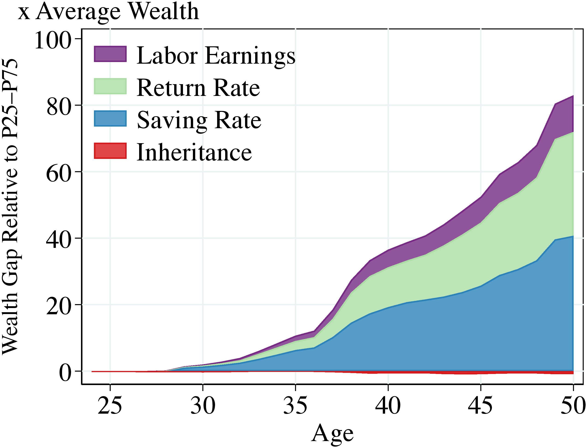
Notes: S-O decomposition for the New and Old Money households aged 50–54.
6 Theories of Wealth Inequality
We now connect our dynamic empirical findings to theories of wealth inequality. We proceed in two steps. First, we evaluate a set of standard “single-channel” models, each calibrated to match cross-sectional wealth inequality through one mechanism at a time—such as superstar income, heterogeneous returns, stochastic discount factors, or nonhomothetic bequest motives. While these models can fully rationalize cross-sectional inequality moments, we show that they fail to capture key dynamic features revealed by our empirical decomposition. Second, we show how our new dynamic moments can be used constructively to discipline structural models. We calibrate a richer model that embeds several mechanisms simultaneously, directly targeting the dynamic decomposition. This exercise illustrates how our new evidence can identify the forces behind wealth accumulation.
6.1 Evaluating Theories of Wealth Inequality
Basic model. We start from a baseline heterogeneous agents lifecycle model à la Aiyagari-Bewely-Huggett-Imrohoroglu with log consumption utility, \(u\left (c\right)=\ln c\). Agents live for a finite number of periods, divided into working and retirement years, and die stochastically with an age-specific conditional probability \(\psi _{h+1}\). During working years, households face a labor income process estimated to match lifecycle patterns and non-Gaussian features in Norwegian data (Halvorsen et al. (2022)); in retirement, they receive pension income. The labor income process contains a fixed type (\(\bar{e}\)), a first-order Markov persistent component (\(\eta\)) whose innovations are drawn from a mixture of normal distributions, and fully transitory non-Gaussian shocks (\(\xi\)). Hence, for a given idiosyncratic exogenous state, \(\Theta =(\bar{e},\eta,\xi)\), the household problem can be written as
$$
\[\begin{aligned} V_{h}(w,\Theta) & =\max _{c,w'\geq 0}\left \{u\left (c\right)+\beta (1-\psi _{h+1})E\left [V_{h+1}(w',\Theta ')\mid \Theta \right]\right \},\\ \text{s.t.} & c+w'=w-\tau ^{a}(w)+(1-\tau ^{k})\cdot r\cdot w+l_{h}(\Theta), \end{aligned}\]$$
where \(w\), \(\tau ^{a}\), and \(\tau ^{k}\) denote household wealth, the progressive wealth tax, and the flat capital income tax, respectively. Furthermore, \(l_{h}\left (\Theta \right)\) represents post-tax-and-transfer earnings. All taxes and transfers (including pensions) are calibrated to the Norwegian data (see Appendix G in OSM for the externally calibrated parameter values). Finally, the baseline model features accidental bequests.
We calibrate a single parameter, the discount factor \(\beta =0.975\), to match the empirical aggregate wealth-to-labor income ratio of 6.4. As in Aiyagari (1994), the baseline fails to generate sufficient top wealth concentration, even when paired with a realistic non-Gaussian earnings process (Guvenen et al. (2024)). In our calibration, the top 0.1% wealth share at age 50 is just 0.8%, far below the 9.3% observed in the data (see column (1) of Table II).
Building on the baseline, we examine four augmented models (columns (2)–(5) of Table II), each corresponding to a prominent theory of wealth inequality with a counterpart in our empirical decomposition. We calibrate all of them to match cross-sectional wealth inequality in the spirit of this literature.
Superstars. Column (2) introduces a superstar income state into the labor income process, following Castañeda et al. (2003). Similarly to their calibration strategy, we calibrate the value (\(108.2\) \(\times\) average labor income) and persistence (0.644) of this shock to match two key cross-sectional statistics at age 50: the top 0.1% wealth share (9.3%) and the top 0.1% total income share (6.6%).24
Heterogeneous returns. Column (3) augments the basic model with heterogeneous returns to wealth (e.g., Benhabib et al. (2019); Hubmer et al. (2021)). We replace capital income in the budget constraint of the household with \((1-\tau ^{k})\cdot (r+z+\zeta)\cdot w\), where \(z\) is a fixed type and \(\zeta\) a transitory shock. We calibrate the dispersion of \(z\) (0.048) and of \(\zeta\) (0.186) to again match the top 0.1% wealth and income shares.25
Stochastic-\(\beta\). Column (4) introduces fundamental heterogeneity in saving behavior via heterogeneity in the discount factor, following Krusell and Smith (1998). We model \(\beta _{i}\) as a fixed type that remains constant within a generation but follows an AR(1) process across generations. We fix the persistence of this process to the one of permanent labor ability (0.24) and calibrate the dispersion (0.113) to match again the top 0.1% wealth share.
Nonhomothetic bequests. Finally, column (5) augments the basic model with a nonhomothetic bequest motive (e.g., De Nardi (2004)). We add a warm-glow bequest utility term \(\nu (b)=\chi \ln (b+\bar{b)}\), weighted by the death rate \(\psi _{h+1}\). We calibrate the nonhomotheticity parameter \(\bar{b}=10.0\times \text{AW}\) and the weight \(\chi =40.8\) to match the top 0.1% wealth share and average wealth at death (\(0.8\times \text{AW}\)).
Evaluation of augmented models matched to cross section. Each of these four augmented models in columns (2)–(5) successfully replicates top wealth concentration at age 50–54 (Panel A of Table II). Figure 13 assesses their broader performance against cross-sectional inequality moments. The left panel shows that all models reproduce the declining lifecycle profile of top wealth shares. The right panel compares top income concentration: while all models generate less income than wealth inequality—as in the data—only the heterogeneous-returns and superstar models match observed levels. The stochastic-\(\beta\) and nonhomothetic bequest models fall short, as they are theories of wealth, not of top income.
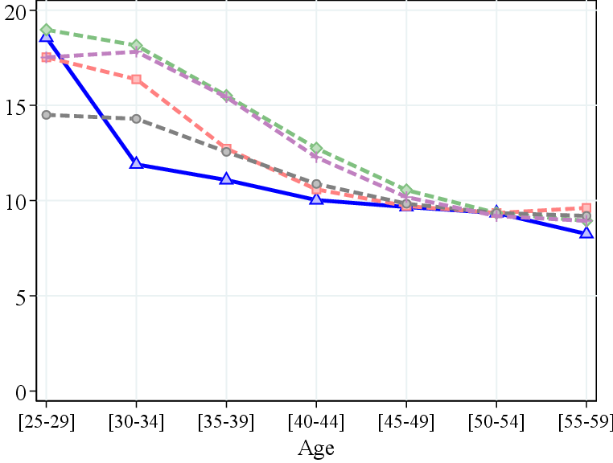
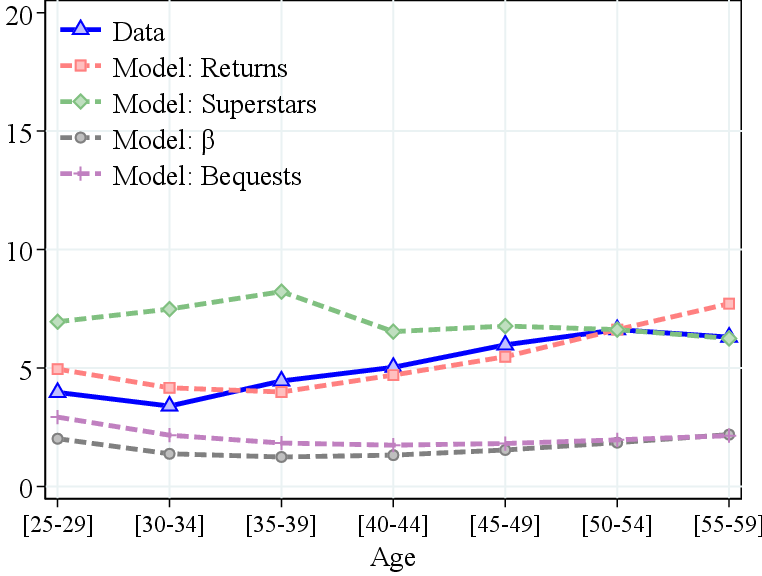
Notes: The fit of each of the four single-channel models to cross-sectional data on top wealth (left) and top income (right) concentration over the life cycle.
We conclude that, based on cross-sectional data alone, all four models remain viable candidate explanations for top wealth concentration. To evaluate the fit of these models to the dynamics of wealth accumulation, we apply the same empirical procedure to simulated data and compute the S-O decomposition for households aged 50–54 in the model’s stationary equilibrium. Results are shown in Panel B of Table II for the full top 0.1% group, while Panels C and D provide the S-O decomposition for the New Money and Old Money subgroups.
| Structural Models | |||||||
| (1) | (2) | (3) | (4) | (5) | (6) | ||
| Data | Basic | Superstar | Returns | \(\beta\) | Bequest | Full | |
| Target cross-section | ✓ | ✓ | ✓ | ✓ | ✓ | ||
| Target dynamics | ✓ | ||||||
| A. Cross-Sectional Moments | |||||||
| Wealth/Lab.Inc. ratio | 6.4 | 6.4 | 6.4 | 6.4 | 6.4 | 6.2 | 6.2 |
| Top 0.1% wealth (%) | 9.3 | 0.8 | 9.3 | 9.3 | 9.3 | 9.2 | 9.2 |
| Top 0.1% income (%) | 6.6 | 0.8 | 6.6 | 6.6 | 1.8 | 2.0 | 6.8 |
| Business owners (%) | 7.2 | 7.3 | |||||
| Debt-to-equity | 1.5 | 1.5 | |||||
| B. Dynamics: Top 0.1% Wealth Decomposition | |||||||
| Initial wealth (\(AW\)) | 6.9 | 2.7 | 5.5 | 31.8 | 57.7 | 124.8 | 8.8 |
| Wealth at 50-54 (\(AW\)) | 124.3 | 11.2 | 124.3 | 124.3 | 124.3 | 122.2 | 122.5 |
| Inheritance (%) | 32.8 | 33.3 | 6.6 | 53.3 | 68.6 | 106.9 | 32.3 |
| Labor income (%) | 3.4 | 50.1 | 57.1 | 0.0 | 0.2 | 0.0 | 5.1 |
| Returns (%) | 24.7 | -0.1 | -0.2 | 20.3 | -0.2 | 0.0 | 27.1 |
| Saving rate (%) | 39.1 | 16.7 | 36.5 | 26.4 | 31.4 | -6.8 | 35.5 |
| C. Dynamics: Q1 (Data: New Money) Wealth Decomposition | |||||||
| Initial wealth (\(AW\)) | -0.1 | 0.0 | 0.0 | 6.9 | 25.5 | 112.9 | 0.0 |
| Wealth at 50-54 (\(AW\)) | 83.7 | 10.9 | 108.3 | 74.5 | 78.7 | 110.1 | 83.4 |
| Inheritance (%) | -1.1 | -1.4 | -0.1 | 36.1 | 55.6 | 107.1 | 0.0 |
| Labor income (%) | 13.3 | 72.3 | 61.2 | 0.4 | 2.7 | -0.1 | 13.7 |
| Returns (%) | 37.6 | -0.1 | -0.1 | 28.4 | -0.3 | 0.0 | 38.9 |
| Saving rate (%) | 50.1 | 29.2 | 39.0 | 35.1 | 41.9 | -7.0 | 47.4 |
| D. Dynamics: Q4 (Data: Old Money) Wealth Decomposition | |||||||
| Initial wealth (\(AW\)) | 25.9 | 9.0 | 20.6 | 74.0 | 113.5 | 139.5 | 33.5 |
| Wealth at 50-54 (\(AW\)) | 217.0 | 10.7 | 133.9 | 214.8 | 204.6 | 136.9 | 213.6 |
| Inheritance (%) | 42.2 | 110.1 | 21.0 | 60.0 | 74.7 | 106.7 | 44.6 |
| Labor income (%) | 0.6 | 4.2 | 49.1 | 0.0 | -0.1 | 0.0 | 1.9 |
| Returns (%) | 25.9 | -0.1 | -0.2 | 18.6 | -0.2 | 0.0 | 22.9 |
| Saving rate (%) | 31.4 | -14.1 | 30.1 | 21.4 | 25.5 | -6.7 | 30.6 |
Notes: Columns 2–6 report the model counterparts to the moments in the data (column 1). In each column, targeted moments are in bold. Cross-sectional wealth and income shares are computed at age 50-54. The dynamic wealth decompositions are computed using the backward-looking Shapley–Owen method at age 50–54. For Panels C and D, households in the top 0.1% at age 50–54 are divided into quartiles based on their initial wealth in the first period (age 23). We refer to Q1 as New Money and Q4 as Old Money when describing the data.
Compared to the data, these models place too much weight on inheritances and too little on return and saving rate heterogeneity, generating excessive intergenerational persistence in wealth. This pattern appears not only for the full top 0.1% group but also when we split that group into quartiles by initial wealth, Q1–Q4. In the data, New Money households start out poor and rise rapidly through high returns and high saving rates. In most models, however, Q1 households start out already wealthy because inheritances dominate their dynamics, so they produce too few self-made households and too little early-life wealth growth. Likewise, the Q4 group (Old Money in the data) relies disproportionately on inherited wealth in the models, exhibiting far less active accumulation than in the data, where Old Money households continue to earn high returns and save at elevated rates.
Among these single-channel models, the superstar model comes closest to generating New Money–type dynamics. Superstar income can be interpreted as entrepreneurial income from both labor and capital. Yet, this model still places too much weight on the joint labor and capital returns contributions (56.9% vs. 28.1% in the data) and far too little on inheritances (6.6% vs. 32.8%). Q4 households fail to compound their initial wealth as their returns are too low. In sum, although all models replicate the cross-sectional concentration of wealth, none matches the dynamic processes that underpin top-wealth accumulation in the data.
6.2 Disciplining Theories of Wealth Inequality
These findings point to two key ingredients needed to match the dynamic features of the data. First, heterogeneous returns, nonmonotone in wealth, are essential to generate New Money households who start with little or no wealth yet accumulate rapidly. Second, a mechanism is needed to ensure that high-wealth households already save at higher rates early in life, and to transmit wealth across generations so as to generate Old Money households—without overstating the role of inheritances as the previous models do. We incorporate both elements in the full model (column (6) of Table II), augmenting the basic model in two ways. First, households may invest in a decreasing returns to scale production technology with heterogeneous returns to a fixed factor (à la Quadrini (2000); Cagetti and De Nardi (2006)). Second, we introduce nonhomothetic preferences via wealth in the utility function (e.g., Gaillard et al. (2023); Carroll (1998); Straub (2019)). We discipline the strength of these mechanisms by directly targeting our dynamic S-O decomposition facts.
Model details and calibration. We choose nine parameters to target fourteen moments in the data. The targeted moments are the five cross-sectional statistics in Panel A of Table II—the wealth–labor income ratio, the top 0.1% wealth and income shares, the share of business owners, and the aggregate debt-to-equity ratio—together with the S–O wealth decomposition shares for the full top 0.1% group and for the New Money and Old Money subgroups in Panels B–D.26 While the nine parameters are jointly identified, we describe below the moment to which each parameter is most closely tied. With fourteen moments and nine parameters, five moments act as over-identifying restrictions.
First, households may invest in a stochastic production technology that uses capital to generate additional income: \(\pi (w,z,\zeta)=\max \{0,\max _{k\leq \lambda w}\{(e^{z+\zeta}\cdot k)^{\mu}-(\delta +r)\cdot k-c_{f}\}\}\), where \(w\) is net worth, \(k\) is entrepreneurial capital subject to a collateral constraint parametrized by \(\lambda\), \(z\) is the entrepreneurial type (constant over the life cycle), and \(\zeta\) is an i.i.d. shock. We fix the returns to scale parameter at \(\mu =0.8\), consistent with the literature (e.g., Guvenen et al. (2023)). Decreasing returns are crucial to match high returns to equity early in life for new entrepreneurs, enabling fast wealth accumulation while preventing excessive divergence as wealth grows. We allow the fixed type \(z\) to be correlated with the permanent labor type \(\bar{{e}}\): \(z=\sqrt{1-\rho _{ez}^{2}}\tilde{{z}}+\rho _{ez}\frac{{\sigma _{z}}}{\sigma _{\bar{{e}}}}(\bar{{e}}-\mathbb{{E}}[\bar{{e}}]),\) where the latent type \(\tilde{{z}}\) follows an independent AR(1) Gaussian process with cross-sectional dispersion \(\sigma _{z}\) and intergenerational persistence \(\rho _{z}\). Under this formulation, \(\sigma _{z}\) is the standard deviation of the effective entrepreneurial type \(z\) and \(\rho _{ez}\) is its correlation with labor type.
The dispersion of (i) the fixed type (\(\sigma _{z}=0.527\))) and (ii) the i.i.d. shock (\(\sigma _{\zeta}=0.774\))) jointly shape the cross-sectional top 0.1% income and wealth shares at age 50. (iii) The correlation \(\rho _{ez}=0.473\) primarily affects the labor income contribution to New Money wealth accumulation, while (iv) the persistence \(\rho _{z}=0.721\) controls intergenerational propagation of high entrepreneurial returns and hence the return component of Old Money.27 (v) The fixed cost \(c_{f}=0.138\times AW\) controls the 7.2% share of entrepreneurs in the population, and (vi) the leverage constraint \(\lambda =2.93\) the aggregate debt-to-equity ratio of 1.5.28
Second, we modify period utility to \(\ln c+\chi \ln (a+\bar{a})\), interpreting the latter as “capitalist spirit” motive. This preference for wealth mirrors the warm-glow bequest motive, except that it is not multiplied by the death rate and, therefore, already important early in life. For comparison, the warm-glow bequest model in column (5) loads way too much on inheritances and even features a negative saving rate contribution (since wealthy heirs initially deplete their wealth).29 (vii) The weight \(\chi =0.68\) and (viii) the nonhomotheticity parameter \(\bar{a}=10.3\times \text{AW}\) affect primarily the inheritance and saving rate contributions in the S-O decomposition. Finally, as in all model versions, (ix) \(\beta =0.934\) controls the wealth-labor income ratio.30
This leaves several of the S-O shares, in particular for New and Old Money, as overidentifying restrictions. In addition, Table II also reports the starting and end points of each group’s lifecycle wealth profiles as additional validation.
Findings. Column (6) of Table II shows that the full model provides a close joint fit to both the cross-sectional moments and the dynamics of wealth accumulation. At age 50, the model replicates the empirical S–O decomposition for the top 0.1%, matching the relative importance of inheritances, labor income, returns, and saving behavior. Figure 14a further shows that the model captures the lifecycle patterns of these components: inheritances dominate early in life but gradually decline in importance, while differences in saving rates and realized returns increasingly account for the widening wealth gap as households age.
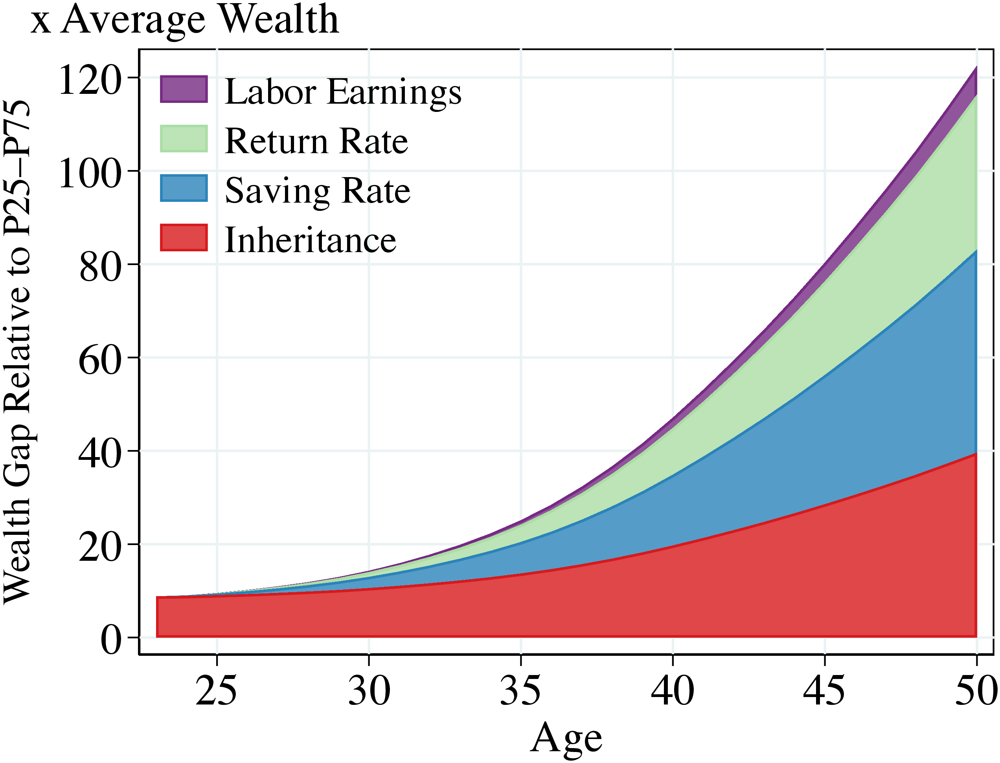
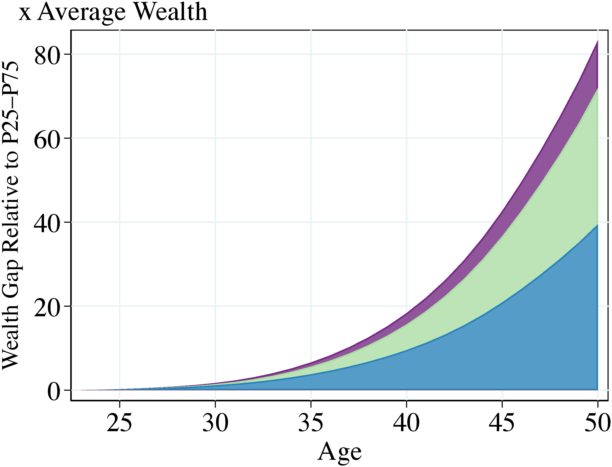
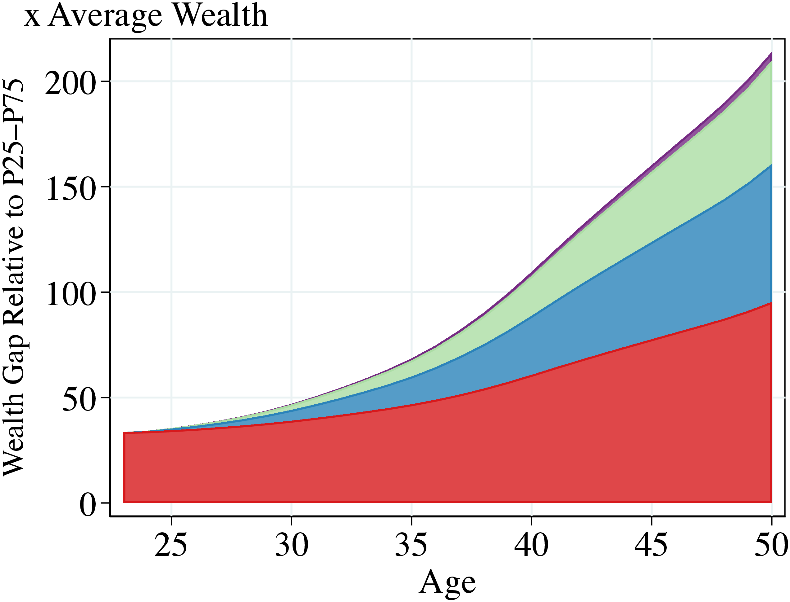
Notes: Panel (A) shows the contribution of each component in the S-O decomposition to the wealth gap between the top 0.1% and the control group (P25-75), in the full model. Panels (B) and (C) show model results for the New and Old Money.
The model also replicates the rapid wealth accumulation of the New Money. As in the data, they start with zero wealth and reach \(83.4\times \text{AW}\) by age 50. Their fast rise is driven primarily by high saving rates and high returns, with a nontrivial contribution from high labor income. As in the data, the New Money in this model earn even higher returns than the Old Money, who themselves enjoy above-average returns. This result arises from decreasing returns to scale technology; conditional on productivity, returns decline with wealth. Therefore, the New Money operate highly productive but capital-constrained start-ups that grow rapidly. Figure 14b shows the resulting lifecycle S-O decomposition.
The model also matches the finding that while the Old Money start with substantial inherited assets (\(33.5\times AW\)), they continue to grow their fortunes to \(213.6\times AW\). The Old Money own mature, well-capitalized firms with healthy returns that, combined with the nonhomothetic consumption-saving motive, sustain persistent wealth accumulation. Figure 14c shows the corresponding lifecycle S-O decomposition.
These findings have important implications for the design of capital income and wealth taxation, as the equity-efficiency trade-off depends critically on the nature of wealth dynamics among the wealthiest—dynamics our analysis helps to illuminate.
7 Conclusions
The earlier literature has offered several explanations for the observed high concentration of wealth, such as the intergenerational transmission of bequests and human capital (De Nardi (2004)) and the heterogeneity in rates of return (Cagetti and De Nardi (2006); Benhabib et al. (2019)), saving rates (Krusell and Smith (1998)), and labor earnings (Castañeda et al. (2003); Kaymak et al. (2026)). In this paper, we used a rich administrative dataset from Norway between 1993 and 2019 to quantify the importance of each of these channels for the wealth accumulation of the richest households. We find that, between ages 45 and 64, the excess wealth of the top 0.1% relative to mid-wealth households is accounted for by higher saving rates (36%), higher inheritances (31%), and higher returns (28%), whereas higher labor income accounts for the small residual (5%).
Furthermore, we find significant heterogeneity among the wealthiest: Around one-fourth of these households, the New Money, start below the median wealth yet achieve rapid wealth growth. Their fast ascent to the top is accounted for by a higher saving rate (50%) and by higher returns on net wealth (38%), with higher labor income (13%) also contributing significantly. In contrast, the Old Money are mainly characterized by higher inheritances (42%) and to a lesser extent by higher saving rates (31%) and higher returns (26%).
Our empirical findings shed light on mechanisms underlying wealth accumulation, especially for the richest. Compared with our new empirical evidence, standard models of wealth inequality—whether emphasizing bequests, return heterogeneity, or stochastic discount factors—put too much emphasis on inheritances and too little on return and saving rate heterogeneity in accounting for top wealth concentration. They generate too few New Money households and insufficient wealth growth for Old Money. The superstar model exhibits the opposite problem, producing too few Old Money households. However, a heterogeneous entrepreneurship model with decreasing returns to scale technology—yielding nonmonotone wealth-dependent returns—and nonhomothetic preferences successfully replicates both cross-sectional inequality as well as our novel evidence on the dynamics of wealth inequality.
These quantitative findings reveal that our novel dynamic empirical facts indeed help us quantify the role of different economic forces behind top wealth concentration. As different mechanisms imply different economic policy prescription, we hope our findings will further feed back into economic research and policy analyses.
8 References
Aiyagari, S. R. (1994). Uninsured idiosyncratic risk and aggregate saving. The Quarterly Journal of Economics, 109 (3), 659–84.
Alstadsæter, A., Jacob, M., Kopczuk, W. and Telle, K. (2025). Accounting for business income in measuring top income shares: Integrated accrual approach using individual and firm data from norway. Journal of the European Economic Association.
—, Johannesen, N. and Zucman, G. (2018). Who owns the wealth in tax havens? macro evidence and implications for global inequality. Journal of Public Economics, 162, 89–100.
Andresen, M. E. and Bè, E. E. (2022). Verdsetting av unoterte selskaper (valuation of unlisted firms). SSB rapporter, 31.
Bach, L., Calvet, L. E. and Sodini, P. (2017). From saving comes having? disentangling the impact of saving on wealth inequality. Swedish House of Finance Research Paper, 18-8.
—, — and — (2020). Rich pickings? risk, return, and skill in household wealth. American Economic Review, 110 (9), 2703–47.
Benhabib, J., Bisin, A. and Luo, M. (2019). Wealth distribution and social mobility in the us: A quantitative approach. American Economic Review, 109 (5), 1623–47.
Black, S. E., Devereux, P. J., Landaud, F. and Salvanes, K. G. (2022). The (un) importance of inheritance. Tech. rep., National Bureau of Economic Research.
—, —, — and — (2023). Where does wealth come from? measuring lifetime resources in norway. Journal of Economic Perspectives, 37 (4), 115–136.
Boar, C., Gorea, D. and Midrigan, V. (2022). Why Are Returns to Private Business Wealth So Dispersed? Tech. rep., NBER.
— and Midrigan, V. (2023). Should we tax capital income or wealth? American Economic Review: Insights, 5 (2), 259–274.
Boserup, S. H., Kopczuk, W. and Kreiner, C. T. (2016). The role of bequests in shaping wealth inequality: evidence from danish wealth records. American Economic Review, 106 (5), 656–661.
—, — and — (2018). Born with a silver spoon? danish evidence on wealth inequality in childhood. The Economic Journal, 128 (612), F514–F544.
Cagetti, M. and De Nardi, M. (2006). Entrepreneurship, frictions, and wealth. Journal of Political Economy, 114 (5), 835–870.
Carroll, C. D. (1998). Why do the rich save so much?
— (2000). Portfolios of the rich.
Castañeda, A., Díaz-Giménez, J. and Ríos-Rull, J.-V. (2003). Accounting for the U.S. earnings and wealth inequality. The Journal of Political Economy, 111 (4), 818–857.
Charles, K. K. and Hurst, E. (2003). The correlation of wealth across generations. Journal of political Economy, 111 (6), 1155–1182.
De Nardi, M. (2004). Wealth Inequality and Intergenerational Links. The Review of Economic Studies, 71 (3), 743–768.
— and Fella, G. (2017). Saving and wealth inequality. Review of Economic Dynamics, 26, 280–300.
Dietz, P. O. (1968). Components of a measurement model: rate of return, risk, and timing. The Journal of Finance, 23 (2), 267–275.
Dynan, K. E., Skinner, J. and Zeldes, S. P. (2004). Do the rich save more? Journal of political economy, 112 (2), 397–444.
Eika, L., Mogstad, M. and Vestad, O. L. (2020). What can we learn about household consumption expenditure from data on income and assets? Journal of Public Economics, 189, 104163.
Fagereng, A., Guiso, L., Malacrino, D. and Pistaferri, L. (2020a). Heterogeneity and persistence in returns to wealth. Econometrica, 88 (1), 115–170.
—, — and Pistaferri, L. (2022). Assortative Mating and Wealth Inequality. Tech. rep., National Bureau of Economic Research.
—, Holm, M. B., Moll, B. and Natvik, G. (2019). Saving behavior across the wealth distribution: The importance of capital gains. Tech. rep., National Bureau of Economic Research.
—, — and Torstensen, K. N. (2020b). Housing wealth in norway, 1993–2015. Journal of Economic and Social Measurement, 45 (1), 65–81.
Federal Reserve Board (2020). Survey of Consumer Finances (SCF), 1989-2019. https://www.federalreserve.gov/econres/scfindex.htm, accessed: [2025].
Gaillard, A., Wangner, P., Hellwig, C. and Werquin, N. (2023). Consumption, wealth, and income inequality: A tale of tails. SSRN 4636704.
Guvenen, F., Kambourov, G., Kuruscu, B., Ocampo, S. and Chen, D. (2023). Use it or lose it: Efficiency and redistributional effects of wealth taxation. The Quarterly Journal of Economics, 138 (2), 835–894.
—, —, —, Ocampo-Diaz, S. and Chen, D. (2019). Use it or lose it: Efficiency gains from wealth taxation. Tech. rep., National Bureau of Economic Research.
—, Ozkan, S. and Madera, R. (2024). Consumption dynamics and welfare under non-gaussian earnings risk. Journal of Economic Dynamics and Control, 169, 104945.
Halvorsen, E., Ozkan, S. and Salgado, S. (2022). Earnings dynamics and its intergenerational transmission: Evidence from norway. Quantitative Economics, 13.
Hubmer, J., Halvorsen, E., Salgado, S. and Ozkan, S. (2026). Why are the wealthiest so wealthy? new longitudinal empirical evidence and implications for theories of wealth inequality: Supplemental material. Econometrica Supplemental Material.
—, Krusell, P. and Smith., A. A. (2021). Sources of us wealth inequality: Past, present, and future. NBER Macroeconomics Annual, 35, 391–455.
Insolera, N., Simmert, B. and Johnson, D. (2021). An overview of data comparisons between psid and other us household surveys. Panel Study of Income Dynamics Technical Paper, 21-02.
Kaymak, B., Leung, D. and Poschke, M. (2026). Accounting for wealth concentration in the united states. American Economic Journal: Macroeconomics, 18 (1), 187–222.
Krusell, P. and Smith, A. A. (1998). Income and wealth heterogeneity in the macroeconomy. Journal of Political Economy, 106 (5), 867–896.
Mahalanobis, P. C. (1936). On the generalized distance in statistics. The Indian Journal of Statistics, 80, S1–S7.
Nekoei, A. and Seim, D. (2023). How do inheritances shape wealth inequality? theory and evidence from sweden. The Review of Economic Studies, 90 (1), 463–498.
OECD (2023). Consumer price index: All items: Total for Norway [NORCPALTT01IXNBM]. Retrieved from FRED, Federal Reserve Bank of St. Louis, https://fred.stlouisfed.org/series/NORCPALTT01IXNBM, accessed: 2025.
Ozkan, S., Song, J. and Karahan, F. (2023). Anatomy of lifetime earnings inequality: Heterogeneity in job-ladder risk versus human capital. Journal of Political Economy Macroeconomics, 1 (3), 506–550.
Pence, K. M. (2006). The role of wealth transformations: An application to estimating the effect of tax incentives on saving. Contributions in Economic Analysis & Policy, 5 (1).
Piketty, T. (2014). Capital in the Twenty-First Century. Cambridge, MA and London, England: Harvard University Press.
Quadrini, V. (2000). Entrepreneurship, saving, and social mobility. Review of Economic Dynamics, 3 (1), 1–40.
Ray, D. and Robson, A. (2018). Certified random: A new order for coauthorship. American Economic Review, 108 (2), 489–520.
Saez, E. and Zucman, G. (2016). Wealth inequality in the united states since 1913: Evidence from capitalized income tax data. The Quarterly Journal of Economics, 131 (2), 519–578.
Shorrocks, A. (2013). Decomposition procedures for distributional analysis: a unified framework based on the shapley value. Journal of Economic Inequality, 11 (1), 99–126.
Smith, M., Yagan, D., Zidar, O. and Zwick, E. (2019). Capitalists in the twenty-first century. The Quarterly Journal of Economics, 134 (4), 1675–1745.
—, Zidar, O. and Zwick, E. (2023). Top wealth in america: New estimates under heterogeneous returns. The Quarterly Journal of Economics, 138 (1), 515–573.
SSB (1993–2019). Statistics norway, administrative registers. https://www.ssb.no/en/data-til-forskning, accessed: [2025].
Straub, L. (2019). Consumption, Savings, and the Distribution of Permanent Income. Tech. rep., Harvard.
Wolff, E. N. (2002). Inheritances and wealth inequality, 1989–1998. American Economic Review, 92 (2), 260–264.
Footnotes
For example, in the US, the main data source on wealth, the Survey of Consumer Finances (SCF), is a triennial cross-sectional survey. The Panel Study of Income Dynamics (PSID) also collects wealth data since 1999 but does not sample the top 1% households well (Insolera et al. (2021)), even though they own more than one-third of total wealth. Finally, Saez and Zucman (2016) impute household wealth from administrative tax records by capitalizing income from different assets, but this method requires strong assumptions on returns (Smith et al. (2023)).↩︎
This backward-looking approach, of course, conditions on an endogenous variable (e.g., households reaching the top). We complement this analysis with a forward-looking investigation documenting the same features over the subsequent 26 years, conditional on the initial wealth quantile. These two approaches jointly paint a complete picture of lifecycle wealth dynamics.↩︎
Both wealth and income are taxed in Norway. Norwegians are asked to report all of their assets and liabilities, even if they do not meet the tax threshold. All variables are measured as of December 31 of each year, so our data represent an end-of-year snapshot of individuals’ balance sheets.↩︎
We trace indirect ownership of public equity through private holding companies back to ultimate individual owners. This adjustment has minimal impact: on average, only 2.5% of private equity is reclassified, with negligible variation across wealth groups or time.↩︎
Tax authorities regularly audit private firms to assess their value and compare it with reported tax forms. Although not all firms are audited, firms with revenues over around $500,000 are required to have their balance sheets audited by an approved auditing entity.↩︎
First, large dividends were paid out immediately before the reform, with minimal distributions afterward. Second, holding companies were created to defer or avoid dividend taxation.↩︎
Only about one-third of parent–child equity transfers appear in the inheritance registry.↩︎
While this approach smooths out short- and medium-term time effects, our 1993–2019 sample period necessarily reflects a specific historical context that includes the information technology revolution, globalization, and institutional evolution.↩︎
Excluding firm liabilities, the top 0.1%’s direct household leverage is only 1.8%.↩︎
The public equity share in Norway is significantly lower than in the US and other OECD countries, while real estate wealth is higher. This is because, first, the Norwegian tax policies promote homeownership (80%+ ownership rate vs. 65% in the US). Second, tax incentives favor private business ownership over public equity. Third, Norway’s public pension system owns roughly one-third of all public equity (see Fagereng et al. (2019)).↩︎
In our analysis, we follow Fagereng et al. (2020a), in calculating the ex post return as the ratio of annual income (including unrealized capital gains) generated from the asset to its value at the beginning of each year, which we adjust for intra-year asset purchases and sales à la Dietz (1968). Life cycle average returns are weighted averages of returns over the life cycle, across households within wealth groups, across conditioning years. For details of our method, see Appendix C in OSM.↩︎
Fagereng et al. (2020a) find a positive correlation between net wealth and equity returns. Our differing results stem from using weighted versus unweighted measures (Figure C.1 in OSM). Boar et al. (2022) similarly document declining equity returns by firm value in Spain.↩︎
Fagereng et al. (2019) emphasize that higher gross saving rates among the wealthy are driven by capital gains, which we observe for the wealthiest primarily as retained earnings from private businesses. To treat business income symmetrically regardless of payout form, we use the gross saving rates in our analysis.↩︎
See Appendix I.3 in OSM for similar patterns for other age groups.↩︎
6.2% and 26.5% of the Old Money have parents in their cohorts’ top 0.1% and top 1%, respectively, versus only 1.1% and 6.8% for the New Money, with 75% of the New Money parents being in the bottom 90% (see Figure I.9 in OSM).↩︎
Smith et al. (2019) also find that in the US, more than 75% of top earners are self-made and unlikely to receive large financial inheritances or inter vivos gifts.↩︎
Only 10% of both New Money and Old Money hold law or medical degrees, while 38% and 48% respectively have a high school education or less. Wealth accumulation dynamics are similar across professions. Thus, unlike what Smith et al. (2019) show for the US, highly educated entrepreneurs (e.g., lawyers, physicians, and so on) neither drive New Money–Old Money differences nor dominate top wealth groups, partly reflecting Norway’s public health care system and civil law tradition.↩︎
The budget equation can be defined using alternative saving rates. For example, defining saving rate out of cash on hand (i.e., \(\tilde{S}_{it}=W_{i,t}/\left (W_{i,t-1}+L_{i,t}+H_{i,t}+R_{i,t}W_{i,t-1}\right)\)) yields similar conclusions (see Figure F.6 in OSM).↩︎
To be precise, to smooth out the noise in the data, we implement this exercise at the age-wealth group level by aggregating the budget constraint in equation 1 within each \(BW_{j}^{h}\).↩︎
Several studies find intergenerational transfers reduce wealth concentration (Boserup et al. (2016) for Denmark; Wolff (2002) for the US) or explain little intergenerational wealth persistence (Charles and Hurst (2003)). Exceptions include Nekoei and Seim (2023), who show Swedish wealth inequality increases post-inheritance as only wealthy heirs preserve transfers, and Boserup et al. (2018), who find initial wealth at age 18 matters for later Danish wealth inequality.↩︎
However, they find transfers constitute a large proportion of resources for a small number of people who have wealthy parents, consistent with our Old Money findings.↩︎
We do not employ the twin-matching approach here and instead track profiles from age 24 onward only, because twin matching becomes less relevant for wealth groups closer to the median as their early life wealth profiles are similar (for instance, the \(\left [P90,P95\right)\) have initial wealth of $0.25AW$ at age 24, closely resembling the $0.12AW$ of median households at that age). As a result, for the top 0.1%, the contribution of inheritances increases from 32.8% to 42.4% because all initial wealth at age 24 is interpreted as inheritance.↩︎
We rely on estimates from Andresen and Bø (2022), shown in Figure F.2 in OSM. We view these imputed market values as upper bounds for private firm valuations because publicly listed firms are presumably positively selected.↩︎
We target a population fraction of superstars of 0.04%, borrowing from Castañeda et al. (2003), and assume that only the highest labor type (\(\bar{{e}}\)) can enter the superstar state. Given the calibrated superstar state exit probability of \(1-0.644=35.6\%\), the implied entry rate into the superstar state, among the highest labor type workers (6% of the population), equals $0.25%$.↩︎
We fix the intergenerational persistence of \(z\) to the one of permanent labor ability (0.24). As a result, the lifetime average return exhibits intergenerational persistence of 0.17, close to the estimate reported in Fagereng et al. (2020a). Alternatively, we have disciplined the return process by directly matching the cross-sectional return standard deviation (10.2 p.p.). The results, available on request, are very similar.↩︎
Each decomposition contains four entries that sum to 100% and therefore provides three independent moments.↩︎
In simulated data, the persistence of the return fixed effect computed as in Fagereng et al. (2020a) is lower at 0.171, close to their empirical estimate of 0.16, because the persistence of effective entrepreneurial ability \(z\) is a convex combination of \(\rho _{z}\) and the one of \(\bar{{e}}\) (0.24), interacts with decreasing returns to scale, and is attenuated by the substantial i.i.d. shock \(\zeta\).↩︎
The implied weighted average firm leverage is about 60%, consistent with the household-level firm-leverage patterns shown in Sections 3.3 and 4.2.↩︎
Benhabib et al. (2019) use a quantitative model targeted to US data to find that return heterogeneity contributes to top wealth concentration but is not sufficient. In addition, a luxury bequest motive is quantitatively important in accounting for top wealth inequality.↩︎
We remove accidental bequests as these overstate the importance of inheritances, even when \(\chi =0\). We relegate non-essential calibration details to Appendix G in OSM, which also shows results for the deterministic lifecycle versions of single-channel models.↩︎